<!DOCTYPE html>
<html lang="" xml:lang="">
<head>

  <meta charset="utf-8" />
  <meta http-equiv="X-UA-Compatible" content="IE=edge" />
  <title>8 Clusteranalyse II: Gemischtskalige Modelle | How 2 do Things with even more Numbers</title>
  <meta name="description" content="8 Clusteranalyse II: Gemischtskalige Modelle | How 2 do Things with even more Numbers" />
  <meta name="generator" content="bookdown 0.24 and GitBook 2.6.7" />

  <meta property="og:title" content="8 Clusteranalyse II: Gemischtskalige Modelle | How 2 do Things with even more Numbers" />
  <meta property="og:type" content="book" />
  
  
  
  

  <meta name="twitter:card" content="summary" />
  <meta name="twitter:title" content="8 Clusteranalyse II: Gemischtskalige Modelle | How 2 do Things with even more Numbers" />
  
  
  

<meta name="author" content="Kami Höferl | https://orcid.org/0000-0002-5397-180X" />


  <meta name="viewport" content="width=device-width, initial-scale=1" />
  <meta name="apple-mobile-web-app-capable" content="yes" />
  <meta name="apple-mobile-web-app-status-bar-style" content="black" />
  
  
<link rel="prev" href="07_cluster_I.html"/>
<link rel="next" href="80_atHome_2.html"/>
<script src="libs/header-attrs-2.12/header-attrs.js"></script>
<script src="libs/jquery-3.6.0/jquery-3.6.0.min.js"></script>
<script src="https://cdn.jsdelivr.net/npm/fuse.js@6.4.6/dist/fuse.min.js"></script>
<link href="libs/gitbook-2.6.7/css/style.css" rel="stylesheet" />
<link href="libs/gitbook-2.6.7/css/plugin-table.css" rel="stylesheet" />
<link href="libs/gitbook-2.6.7/css/plugin-bookdown.css" rel="stylesheet" />
<link href="libs/gitbook-2.6.7/css/plugin-highlight.css" rel="stylesheet" />
<link href="libs/gitbook-2.6.7/css/plugin-search.css" rel="stylesheet" />
<link href="libs/gitbook-2.6.7/css/plugin-fontsettings.css" rel="stylesheet" />
<link href="libs/gitbook-2.6.7/css/plugin-clipboard.css" rel="stylesheet" />


<link href="libs/anchor-sections-1.1.0/anchor-sections.css" rel="stylesheet" />
<link href="libs/anchor-sections-1.1.0/anchor-sections-hash.css" rel="stylesheet" />
<script src="libs/anchor-sections-1.1.0/anchor-sections.js"></script>
<html>

  <head>
  <script>
    window.addEventListener("load", () => {
        const enabled = document.querySelectorAll(".fullscreen-enabled");
        for (let i = 0; i < enabled.length; i++) {
            enabled[i].style.cursor = "pointer";
            enabled[i].onclick = () => {
                enabled[i].requestFullscreen();
            };
        }
    });
  </script>
  </head>

  <body>
  <!-- body content here -->
  </body>

</html>


<style type="text/css">
pre > code.sourceCode { white-space: pre; position: relative; }
pre > code.sourceCode > span { display: inline-block; line-height: 1.25; }
pre > code.sourceCode > span:empty { height: 1.2em; }
.sourceCode { overflow: visible; }
code.sourceCode > span { color: inherit; text-decoration: inherit; }
pre.sourceCode { margin: 0; }
@media screen {
div.sourceCode { overflow: auto; }
}
@media print {
pre > code.sourceCode { white-space: pre-wrap; }
pre > code.sourceCode > span { text-indent: -5em; padding-left: 5em; }
}
pre.numberSource code
  { counter-reset: source-line 0; }
pre.numberSource code > span
  { position: relative; left: -4em; counter-increment: source-line; }
pre.numberSource code > span > a:first-child::before
  { content: counter(source-line);
    position: relative; left: -1em; text-align: right; vertical-align: baseline;
    border: none; display: inline-block;
    -webkit-touch-callout: none; -webkit-user-select: none;
    -khtml-user-select: none; -moz-user-select: none;
    -ms-user-select: none; user-select: none;
    padding: 0 4px; width: 4em;
    color: #aaaaaa;
  }
pre.numberSource { margin-left: 3em; border-left: 1px solid #aaaaaa;  padding-left: 4px; }
div.sourceCode
  {   }
@media screen {
pre > code.sourceCode > span > a:first-child::before { text-decoration: underline; }
}
code span.al { color: #ff0000; } /* Alert */
code span.an { color: #008000; } /* Annotation */
code span.at { } /* Attribute */
code span.bu { } /* BuiltIn */
code span.cf { color: #0000ff; } /* ControlFlow */
code span.ch { color: #008080; } /* Char */
code span.cn { } /* Constant */
code span.co { color: #008000; } /* Comment */
code span.cv { color: #008000; } /* CommentVar */
code span.do { color: #008000; } /* Documentation */
code span.er { color: #ff0000; font-weight: bold; } /* Error */
code span.ex { } /* Extension */
code span.im { } /* Import */
code span.in { color: #008000; } /* Information */
code span.kw { color: #0000ff; } /* Keyword */
code span.op { } /* Operator */
code span.ot { color: #ff4000; } /* Other */
code span.pp { color: #ff4000; } /* Preprocessor */
code span.sc { color: #008080; } /* SpecialChar */
code span.ss { color: #008080; } /* SpecialString */
code span.st { color: #008080; } /* String */
code span.va { } /* Variable */
code span.vs { color: #008080; } /* VerbatimString */
code span.wa { color: #008000; font-weight: bold; } /* Warning */
</style>

<style type="text/css">
/* Used with Pandoc 2.11+ new --citeproc when CSL is used */
div.csl-bib-body { }
div.csl-entry {
  clear: both;
}
.hanging div.csl-entry {
  margin-left:2em;
  text-indent:-2em;
}
div.csl-left-margin {
  min-width:2em;
  float:left;
}
div.csl-right-inline {
  margin-left:2em;
  padding-left:1em;
}
div.csl-indent {
  margin-left: 2em;
}
</style>

<link rel="stylesheet" href="style.css" type="text/css" />
</head>

<body>


  <div class="book without-animation with-summary font-size-2 font-family-1" data-basepath=".">

    <div class="book-summary">
      <nav role="navigation">

<ul class="summary">
<li><a href="index.html#howdy">Howdy*<span></span></a></li>
<li class="chapter" data-level="1" data-path="01_syllabus.html"><a href="01_syllabus.html"><i class="fa fa-check"></i><b>1</b> Ouvertüre (aka “Syllabus”)<span></span></a>
<ul>
<li class="chapter" data-level="1.1" data-path="01_syllabus.html"><a href="01_syllabus.html#lernziele"><i class="fa fa-check"></i><b>1.1</b> Lernziele<span></span></a></li>
<li class="chapter" data-level="1.2" data-path="01_syllabus.html"><a href="01_syllabus.html#zeitplanung"><i class="fa fa-check"></i><b>1.2</b> Zeitplanung<span></span></a></li>
<li class="chapter" data-level="1.3" data-path="01_syllabus.html"><a href="01_syllabus.html#rulez-of-the-game"><i class="fa fa-check"></i><b>1.3</b> Rulez of the Game<span></span></a></li>
<li class="chapter" data-level="1.4" data-path="01_syllabus.html"><a href="01_syllabus.html#bewertungskriterien"><i class="fa fa-check"></i><b>1.4</b> Bewertungskriterien<span></span></a></li>
<li class="chapter" data-level="1.5" data-path="01_syllabus.html"><a href="01_syllabus.html#formelles-zu-den-übungsarbeiten-homes"><i class="fa fa-check"></i><b>1.5</b> Formelles zu den Übungsarbeiten (@Homes)<span></span></a></li>
<li class="chapter" data-level="1.6" data-path="01_syllabus.html"><a href="01_syllabus.html#empfehlung-zur-eingesetzten-software"><i class="fa fa-check"></i><b>1.6</b> Empfehlung zur eingesetzten Software<span></span></a></li>
<li class="chapter" data-level="1.7" data-path="01_syllabus.html"><a href="01_syllabus.html#ausgewählte-hilfestellungen-zum-thema-r-und-rstudio"><i class="fa fa-check"></i><b>1.7</b> Ausgewählte Hilfestellungen zum Thema R und RStudio<span></span></a></li>
<li class="chapter" data-level="1.8" data-path="01_syllabus.html"><a href="01_syllabus.html#literatur-zur-lehrveranstaltung"><i class="fa fa-check"></i><b>1.8</b> Literatur zur Lehrveranstaltung<span></span></a></li>
</ul></li>
<li class="chapter" data-level="2" data-path="02_why.html"><a href="02_why.html"><i class="fa fa-check"></i><b>2</b> Wozu noch mehr Verfahren?<span></span></a>
<ul>
<li><a href="02_why.html#zielsetzung-dieser-einheit">📢 Zielsetzung dieser Einheit<span></span></a></li>
<li class="chapter" data-level="2.1" data-path="02_why.html"><a href="02_why.html#recap-zur-rolle-der-methoden-in-der-empirischen-forschung"><i class="fa fa-check"></i><b>2.1</b> Recap: Zur Rolle der Methoden in der empirischen Forschung<span></span></a></li>
<li class="chapter" data-level="2.2" data-path="02_why.html"><a href="02_why.html#multivariate-verfahren---ein-kurzer-überblick"><i class="fa fa-check"></i><b>2.2</b> Multivariate Verfahren - ein kurzer Überblick<span></span></a></li>
<li class="chapter" data-level="2.3" data-path="02_why.html"><a href="02_why.html#quantitative-inhaltsanalyse---ein-erster-einblick"><i class="fa fa-check"></i><b>2.3</b> Quantitative Inhaltsanalyse - ein erster Einblick<span></span></a></li>
</ul></li>
<li class="chapter" data-level="3" data-path="03_warmup_1.html"><a href="03_warmup_1.html"><i class="fa fa-check"></i><b>3</b> Warmup 1: Messen und Skalen<span></span></a>
<ul>
<li><a href="03_warmup_1.html#zielsetzung-dieser-einheit-1">📢 Zielsetzung dieser Einheit<span></span></a></li>
<li class="chapter" data-level="3.1" data-path="03_warmup_1.html"><a href="03_warmup_1.html#was-passiert-beim-messen"><i class="fa fa-check"></i><b>3.1</b> Was passiert beim Messen?<span></span></a></li>
<li class="chapter" data-level="3.2" data-path="03_warmup_1.html"><a href="03_warmup_1.html#skalenniveaus-reloaded"><i class="fa fa-check"></i><b>3.2</b> Skalenniveaus (reloaded)<span></span></a></li>
</ul></li>
<li class="chapter" data-level="4" data-path="04_warmup_2.html"><a href="04_warmup_2.html"><i class="fa fa-check"></i><b>4</b> Warmup 2: Wissenschaftliche Datenanalyse<span></span></a>
<ul>
<li><a href="04_warmup_2.html#zielsetzung-dieser-einheit-2">📢 Zielsetzung dieser Einheit<span></span></a></li>
<li class="chapter" data-level="4.1" data-path="04_warmup_2.html"><a href="04_warmup_2.html#daten-analysieren---aber-wie"><i class="fa fa-check"></i><b>4.1</b> Daten analysieren - aber wie?<span></span></a></li>
<li class="chapter" data-level="4.2" data-path="04_warmup_2.html"><a href="04_warmup_2.html#anforderungen-an-eine-wissenschaftliche-datenanalyse"><i class="fa fa-check"></i><b>4.2</b> Anforderungen an eine wissenschaftliche Datenanalyse<span></span></a></li>
<li class="chapter" data-level="4.3" data-path="04_warmup_2.html"><a href="04_warmup_2.html#daten-finden-und-validieren"><i class="fa fa-check"></i><b>4.3</b> Daten finden und validieren<span></span></a></li>
</ul></li>
<li class="chapter" data-level="5" data-path="05_multireg_I.html"><a href="05_multireg_I.html"><i class="fa fa-check"></i><b>5</b> Multiple Regression I: Grundlagen linearer Modelle<span></span></a>
<ul>
<li><a href="05_multireg_I.html#zielsetzung-dieser-einheit-3">📢 Zielsetzung dieser Einheit<span></span></a></li>
<li class="chapter" data-level="5.1" data-path="05_multireg_I.html"><a href="05_multireg_I.html#ouvert-reg1"><i class="fa fa-check"></i><b>5.1</b> Ouvertüre<span></span></a></li>
<li class="chapter" data-level="5.2" data-path="05_multireg_I.html"><a href="05_multireg_I.html#dataimport-reg1"><i class="fa fa-check"></i><b>5.2</b> Daten importieren<span></span></a></li>
<li class="chapter" data-level="5.3" data-path="05_multireg_I.html"><a href="05_multireg_I.html#daten-validieren"><i class="fa fa-check"></i><b>5.3</b> Daten validieren<span></span></a>
<ul>
<li class="chapter" data-level="5.3.1" data-path="05_multireg_I.html"><a href="05_multireg_I.html#map-impfquoten"><i class="fa fa-check"></i><b>5.3.1</b> Ein Exkurs: Die räumliche Variabilität der Impfquoten<span></span></a></li>
</ul></li>
<li class="chapter" data-level="5.4" data-path="05_multireg_I.html"><a href="05_multireg_I.html#die-mathematischen-grundlagen-linearer-modelle"><i class="fa fa-check"></i><b>5.4</b> Die mathematischen Grundlagen linearer Modelle<span></span></a></li>
<li class="chapter" data-level="5.5" data-path="05_multireg_I.html"><a href="05_multireg_I.html#die-gedankliche-modellbildung"><i class="fa fa-check"></i><b>5.5</b> Die gedankliche Modellbildung<span></span></a></li>
<li class="chapter" data-level="5.6" data-path="05_multireg_I.html"><a href="05_multireg_I.html#ein-blick-auf-die-gewählten-variablen"><i class="fa fa-check"></i><b>5.6</b> Ein Blick auf die gewählten Variablen<span></span></a>
<ul>
<li class="chapter" data-level="5.6.1" data-path="05_multireg_I.html"><a href="05_multireg_I.html#ztrans"><i class="fa fa-check"></i><b>5.6.1</b> Standardisierung von Variablen<span></span></a></li>
<li class="chapter" data-level="5.6.2" data-path="05_multireg_I.html"><a href="05_multireg_I.html#korrel-reg1"><i class="fa fa-check"></i><b>5.6.2</b> Beziehungen der Variablen zueinander<span></span></a></li>
</ul></li>
<li class="chapter" data-level="5.7" data-path="05_multireg_I.html"><a href="05_multireg_I.html#die-modellbildung"><i class="fa fa-check"></i><b>5.7</b> Die Modellbildung<span></span></a>
<ul>
<li class="chapter" data-level="5.7.1" data-path="05_multireg_I.html"><a href="05_multireg_I.html#referenzmodell"><i class="fa fa-check"></i><b>5.7.1</b> Ein alternatives Modell<span></span></a></li>
</ul></li>
<li class="chapter" data-level="5.8" data-path="05_multireg_I.html"><a href="05_multireg_I.html#annahmen"><i class="fa fa-check"></i><b>5.8</b> Überprüfung der Modellannahmen<span></span></a>
<ul>
<li class="chapter" data-level="5.8.1" data-path="05_multireg_I.html"><a href="05_multireg_I.html#prüfung-des-linearen-zusammenhangs"><i class="fa fa-check"></i><b>5.8.1</b> Prüfung des linearen Zusammenhangs<span></span></a></li>
<li class="chapter" data-level="5.8.2" data-path="05_multireg_I.html"><a href="05_multireg_I.html#prüfung-der-unabhängigkeit-der-erklärenden-variablen-multikollinearität"><i class="fa fa-check"></i><b>5.8.2</b> Prüfung der Unabhängigkeit der erklärenden Variablen (“Multikollinearität”)<span></span></a></li>
<li class="chapter" data-level="5.8.3" data-path="05_multireg_I.html"><a href="05_multireg_I.html#prüfung-der-normalverteilung-der-residuen"><i class="fa fa-check"></i><b>5.8.3</b> Prüfung der Normalverteilung der Residuen<span></span></a></li>
<li class="chapter" data-level="5.8.4" data-path="05_multireg_I.html"><a href="05_multireg_I.html#prüfung-der-konstanz-der-varianz-der-residuen-homoskedastizität"><i class="fa fa-check"></i><b>5.8.4</b> Prüfung der Konstanz der Varianz der Residuen (“Homoskedastizität”)<span></span></a></li>
<li class="chapter" data-level="5.8.5" data-path="05_multireg_I.html"><a href="05_multireg_I.html#prüfung-auf-autokorrelation"><i class="fa fa-check"></i><b>5.8.5</b> Prüfung auf Autokorrelation<span></span></a></li>
</ul></li>
</ul></li>
<li class="chapter" data-level="6" data-path="06_multireg_II.html"><a href="06_multireg_II.html"><i class="fa fa-check"></i><b>6</b> Multiple Regression II: Qualitative Variablen einbinden<span></span></a>
<ul>
<li><a href="06_multireg_II.html#zielsetzung-dieser-einheit-4">📢 Zielsetzung dieser Einheit<span></span></a></li>
<li class="chapter" data-level="6.1" data-path="06_multireg_II.html"><a href="06_multireg_II.html#ouvertüre"><i class="fa fa-check"></i><b>6.1</b> Ouvertüre<span></span></a></li>
<li class="chapter" data-level="6.2" data-path="06_multireg_II.html"><a href="06_multireg_II.html#gedankliche-modellbildung"><i class="fa fa-check"></i><b>6.2</b> Gedankliche Modellbildung<span></span></a></li>
<li class="chapter" data-level="6.3" data-path="06_multireg_II.html"><a href="06_multireg_II.html#daten-importieren"><i class="fa fa-check"></i><b>6.3</b> Daten importieren<span></span></a></li>
<li class="chapter" data-level="6.4" data-path="06_multireg_II.html"><a href="06_multireg_II.html#die-bundeslandzugehörigkeit-der-bezirke-ermitteln"><i class="fa fa-check"></i><b>6.4</b> Die Bundeslandzugehörigkeit der Bezirke ermitteln<span></span></a></li>
<li class="chapter" data-level="6.5" data-path="06_multireg_II.html"><a href="06_multireg_II.html#qualVaria"><i class="fa fa-check"></i><b>6.5</b> Qualitative Variablen in Regressionsmodellen nutzen<span></span></a></li>
<li class="chapter" data-level="6.6" data-path="06_multireg_II.html"><a href="06_multireg_II.html#der-einfluß-des-bundeslandes-auf-die-impfquote"><i class="fa fa-check"></i><b>6.6</b> Der Einfluß des Bundeslandes auf die Impfquote<span></span></a>
<ul>
<li class="chapter" data-level="6.6.1" data-path="06_multireg_II.html"><a href="06_multireg_II.html#standardisieren-der-metrischen-variablen"><i class="fa fa-check"></i><b>6.6.1</b> Standardisieren der metrischen Variablen<span></span></a></li>
<li class="chapter" data-level="6.6.2" data-path="06_multireg_II.html"><a href="06_multireg_II.html#reproduktion-unseres-referenzmodells-aus-einheit-refreg1"><i class="fa fa-check"></i><b>6.6.2</b> Reproduktion unseres Referenzmodells aus Einheit @ref(reg1)<span></span></a></li>
<li class="chapter" data-level="6.6.3" data-path="06_multireg_II.html"><a href="06_multireg_II.html#erweiterung-des-modells-um-die-bundeslandzugehörigkeit-der-bezirke"><i class="fa fa-check"></i><b>6.6.3</b> Erweiterung des Modells um die Bundeslandzugehörigkeit der Bezirke<span></span></a></li>
<li class="chapter" data-level="6.6.4" data-path="06_multireg_II.html"><a href="06_multireg_II.html#modelloptimierung"><i class="fa fa-check"></i><b>6.6.4</b> Modelloptimierung<span></span></a></li>
</ul></li>
<li class="chapter" data-level="6.7" data-path="06_multireg_II.html"><a href="06_multireg_II.html#abschließendes-prüfen-der-modellannahmen"><i class="fa fa-check"></i><b>6.7</b> Abschließendes Prüfen der Modellannahmen<span></span></a>
<ul>
<li class="chapter" data-level="6.7.1" data-path="06_multireg_II.html"><a href="06_multireg_II.html#prüfung-des-linearen-zusammenhangs-1"><i class="fa fa-check"></i><b>6.7.1</b> Prüfung des linearen Zusammenhangs<span></span></a></li>
<li class="chapter" data-level="6.7.2" data-path="06_multireg_II.html"><a href="06_multireg_II.html#prüfung-der-normalverteilung-der-residuen-1"><i class="fa fa-check"></i><b>6.7.2</b> Prüfung der Normalverteilung der Residuen<span></span></a></li>
<li class="chapter" data-level="6.7.3" data-path="06_multireg_II.html"><a href="06_multireg_II.html#prüfung-des-erwartungswerts-der-residuen"><i class="fa fa-check"></i><b>6.7.3</b> Prüfung des Erwartungswerts der Residuen<span></span></a></li>
<li class="chapter" data-level="6.7.4" data-path="06_multireg_II.html"><a href="06_multireg_II.html#prüfung-der-konstanz-der-varianz-der-residuen-homoskedastizität-1"><i class="fa fa-check"></i><b>6.7.4</b> Prüfung der Konstanz der Varianz der Residuen (“Homoskedastizität”)<span></span></a></li>
<li class="chapter" data-level="6.7.5" data-path="06_multireg_II.html"><a href="06_multireg_II.html#prüfung-auf-autokorrelation-1"><i class="fa fa-check"></i><b>6.7.5</b> Prüfung auf Autokorrelation<span></span></a></li>
</ul></li>
</ul></li>
<li class="chapter" data-level="7" data-path="07_cluster_I.html"><a href="07_cluster_I.html"><i class="fa fa-check"></i><b>7</b> Clusteranalyse I: Grundlagen<span></span></a>
<ul>
<li><a href="07_cluster_I.html#zielsetzung-dieser-einheit-5">📢 Zielsetzung dieser Einheit<span></span></a></li>
<li class="chapter" data-level="7.1" data-path="07_cluster_I.html"><a href="07_cluster_I.html#was-passiert-bei-einer-clusteranalyse"><i class="fa fa-check"></i><b>7.1</b> Was passiert bei einer Clusteranalyse?<span></span></a></li>
<li class="chapter" data-level="7.2" data-path="07_cluster_I.html"><a href="07_cluster_I.html#ein-beispiel"><i class="fa fa-check"></i><b>7.2</b> Ein Beispiel<span></span></a>
<ul>
<li class="chapter" data-level="7.2.1" data-path="07_cluster_I.html"><a href="07_cluster_I.html#ein-versuch-zur-klassifikation-der-corona-lage-in-österreich-bezirken"><i class="fa fa-check"></i><b>7.2.1</b> Ein Versuch zur Klassifikation der “Corona-Lage” in Österreich Bezirken<span></span></a></li>
</ul></li>
<li class="chapter" data-level="7.3" data-path="07_cluster_I.html"><a href="07_cluster_I.html#vorueberlegungen-cluster"><i class="fa fa-check"></i><b>7.3</b> Einige Vorüberlegungen<span></span></a>
<ul>
<li class="chapter" data-level="7.3.1" data-path="07_cluster_I.html"><a href="07_cluster_I.html#identifikation-der-zur-klassifikation-verwendeten-variablen"><i class="fa fa-check"></i><b>7.3.1</b> Identifikation der zur Klassifikation verwendeten Variablen<span></span></a></li>
<li class="chapter" data-level="7.3.2" data-path="07_cluster_I.html"><a href="07_cluster_I.html#überprüfen-der-gleichgewichtung-der-variablen"><i class="fa fa-check"></i><b>7.3.2</b> Überprüfen der Gleichgewichtung der Variablen<span></span></a></li>
<li class="chapter" data-level="7.3.3" data-path="07_cluster_I.html"><a href="07_cluster_I.html#ein-blick-auf-die-varianz-der-ausgewählten-variablen"><i class="fa fa-check"></i><b>7.3.3</b> Ein Blick auf die Varianz der ausgewählten Variablen<span></span></a></li>
<li class="chapter" data-level="7.3.4" data-path="07_cluster_I.html"><a href="07_cluster_I.html#die-identifikation-clusteranalytischer-ausreißer"><i class="fa fa-check"></i><b>7.3.4</b> Die Identifikation clusteranalytischer Ausreißer<span></span></a></li>
</ul></li>
<li class="chapter" data-level="7.4" data-path="07_cluster_I.html"><a href="07_cluster_I.html#die-clusterung-der-bezirke"><i class="fa fa-check"></i><b>7.4</b> Die Clusterung der Bezirke<span></span></a>
<ul>
<li class="chapter" data-level="7.4.1" data-path="07_cluster_I.html"><a href="07_cluster_I.html#die-anzahl-der-cluster-bestimmen"><i class="fa fa-check"></i><b>7.4.1</b> Die Anzahl der Cluster bestimmen<span></span></a></li>
</ul></li>
<li class="chapter" data-level="7.5" data-path="07_cluster_I.html"><a href="07_cluster_I.html#inhaltliche-beschreibung-der-cluster"><i class="fa fa-check"></i><b>7.5</b> Inhaltliche Beschreibung der Cluster<span></span></a></li>
<li class="chapter" data-level="7.6" data-path="07_cluster_I.html"><a href="07_cluster_I.html#darstellung-der-räumlichen-verteilung"><i class="fa fa-check"></i><b>7.6</b> Darstellung der räumlichen Verteilung<span></span></a></li>
</ul></li>
<li class="chapter" data-level="8" data-path="08_cluster_II_v2.html"><a href="08_cluster_II_v2.html"><i class="fa fa-check"></i><b>8</b> Clusteranalyse II: Gemischtskalige Modelle<span></span></a>
<ul>
<li><a href="08_cluster_II_v2.html#zielsetzung-dieser-einheit-6">📢 Zielsetzung dieser Einheit<span></span></a></li>
<li class="chapter" data-level="8.1" data-path="08_cluster_II_v2.html"><a href="08_cluster_II_v2.html#wie-funktioniert-gemischtskalige-clusterung"><i class="fa fa-check"></i><b>8.1</b> (Wie) Funktioniert gemischtskalige Clusterung?<span></span></a></li>
<li class="chapter" data-level="8.2" data-path="08_cluster_II_v2.html"><a href="08_cluster_II_v2.html#die-gower-distanz"><i class="fa fa-check"></i><b>8.2</b> Die Gower-Distanz<span></span></a></li>
<li class="chapter" data-level="8.3" data-path="08_cluster_II_v2.html"><a href="08_cluster_II_v2.html#ein-beispiel-überprüfung-der-hillbilly-these-zur-covid-19-schutzimpfung"><i class="fa fa-check"></i><b>8.3</b> Ein Beispiel: Überprüfung der “Hillbilly-These” zur COVID-19-Schutzimpfung<span></span></a></li>
<li class="chapter" data-level="8.4" data-path="08_cluster_II_v2.html"><a href="08_cluster_II_v2.html#vorueberlegungen-cluster-2"><i class="fa fa-check"></i><b>8.4</b> Einige Vorüberlegungen<span></span></a></li>
<li class="chapter" data-level="8.5" data-path="08_cluster_II_v2.html"><a href="08_cluster_II_v2.html#die-datenaufbereitung"><i class="fa fa-check"></i><b>8.5</b> Die Datenaufbereitung<span></span></a></li>
<li class="chapter" data-level="8.6" data-path="08_cluster_II_v2.html"><a href="08_cluster_II_v2.html#ein-blick-auf-die-gewählten-clustervariablen"><i class="fa fa-check"></i><b>8.6</b> Ein Blick auf die gewählten Clustervariablen<span></span></a></li>
<li class="chapter" data-level="8.7" data-path="08_cluster_II_v2.html"><a href="08_cluster_II_v2.html#ermittlung-der-ähnlichkeiten"><i class="fa fa-check"></i><b>8.7</b> Ermittlung der Ähnlichkeiten<span></span></a></li>
<li class="chapter" data-level="8.8" data-path="08_cluster_II_v2.html"><a href="08_cluster_II_v2.html#identifikation-von-ausreißern"><i class="fa fa-check"></i><b>8.8</b> Identifikation von Ausreißern<span></span></a></li>
<li class="chapter" data-level="8.9" data-path="08_cluster_II_v2.html"><a href="08_cluster_II_v2.html#clusterung-der-gemeinden"><i class="fa fa-check"></i><b>8.9</b> Clusterung der Gemeinden<span></span></a></li>
<li class="chapter" data-level="8.10" data-path="08_cluster_II_v2.html"><a href="08_cluster_II_v2.html#beurteilung-der-trennschärfe-der-gewählten-clusteranzahl"><i class="fa fa-check"></i><b>8.10</b> Beurteilung der Trennschärfe der gewählten Clusteranzahl<span></span></a></li>
<li class="chapter" data-level="8.11" data-path="08_cluster_II_v2.html"><a href="08_cluster_II_v2.html#charakterisierung-der-cluster"><i class="fa fa-check"></i><b>8.11</b> Charakterisierung der Cluster<span></span></a></li>
<li class="chapter" data-level="8.12" data-path="08_cluster_II_v2.html"><a href="08_cluster_II_v2.html#die-räumliche-verteilung-der-cluster"><i class="fa fa-check"></i><b>8.12</b> Die räumliche Verteilung der Cluster<span></span></a>
<ul>
<li class="chapter" data-level="8.12.1" data-path="08_cluster_II_v2.html"><a href="08_cluster_II_v2.html#die-datenbeschaffung--aufbereitung"><i class="fa fa-check"></i><b>8.12.1</b> Die Datenbeschaffung &amp; -aufbereitung<span></span></a></li>
<li class="chapter" data-level="8.12.2" data-path="08_cluster_II_v2.html"><a href="08_cluster_II_v2.html#die-attributdaten-joinen"><i class="fa fa-check"></i><b>8.12.2</b> Die Attributdaten joinen<span></span></a></li>
<li class="chapter" data-level="8.12.3" data-path="08_cluster_II_v2.html"><a href="08_cluster_II_v2.html#die-räumliche-verteilung-der-cluster-darstellen"><i class="fa fa-check"></i><b>8.12.3</b> Die räumliche Verteilung der Cluster darstellen<span></span></a></li>
</ul></li>
</ul></li>
<li class="chapter" data-level="9" data-path="80_atHome_2.html"><a href="80_atHome_2.html"><i class="fa fa-check"></i><b>9</b> @Home2: Multiple Regression<span></span></a>
<ul>
<li><a href="80_atHome_2.html#zielsetzung">📢 Zielsetzung<span></span></a></li>
<li class="chapter" data-level="9.1" data-path="80_atHome_2.html"><a href="80_atHome_2.html#ausgangslage"><i class="fa fa-check"></i><b>9.1</b> Ausgangslage<span></span></a></li>
<li class="chapter" data-level="9.2" data-path="80_atHome_2.html"><a href="80_atHome_2.html#aufgabenstellung"><i class="fa fa-check"></i><b>9.2</b> Aufgabenstellung<span></span></a></li>
<li class="chapter" data-level="9.3" data-path="80_atHome_2.html"><a href="80_atHome_2.html#formelles"><i class="fa fa-check"></i><b>9.3</b> Formelles<span></span></a></li>
<li class="chapter" data-level="9.4" data-path="80_atHome_2.html"><a href="80_atHome_2.html#empfehlung"><i class="fa fa-check"></i><b>9.4</b> Empfehlung<span></span></a></li>
</ul></li>
<li class="chapter" data-level="10" data-path="81_atHome_3.html"><a href="81_atHome_3.html"><i class="fa fa-check"></i><b>10</b> @Home3: Clusteranalyse<span></span></a>
<ul>
<li><a href="81_atHome_3.html#zielsetzung-1">📢 Zielsetzung<span></span></a></li>
<li class="chapter" data-level="10.1" data-path="81_atHome_3.html"><a href="81_atHome_3.html#ausgangslage-1"><i class="fa fa-check"></i><b>10.1</b> Ausgangslage<span></span></a></li>
<li class="chapter" data-level="10.2" data-path="81_atHome_3.html"><a href="81_atHome_3.html#datengrundlage"><i class="fa fa-check"></i><b>10.2</b> Datengrundlage<span></span></a></li>
<li class="chapter" data-level="10.3" data-path="81_atHome_3.html"><a href="81_atHome_3.html#aufgabenstellung-1"><i class="fa fa-check"></i><b>10.3</b> Aufgabenstellung<span></span></a></li>
<li class="chapter" data-level="10.4" data-path="81_atHome_3.html"><a href="81_atHome_3.html#formelles-1"><i class="fa fa-check"></i><b>10.4</b> Formelles<span></span></a></li>
<li class="chapter" data-level="10.5" data-path="81_atHome_3.html"><a href="81_atHome_3.html#empfehlung-1"><i class="fa fa-check"></i><b>10.5</b> Empfehlung<span></span></a></li>
</ul></li>
<li class="chapter" data-level="11" data-path="90_reporting.html"><a href="90_reporting.html"><i class="fa fa-check"></i><b>11</b> Addendum 1: Spreading the Word<span></span></a>
<ul>
<li><a href="90_reporting.html#zielsetzung-dieser-einheit-7">📢 Zielsetzung dieser Einheit<span></span></a></li>
<li class="chapter" data-level="11.1" data-path="90_reporting.html"><a href="90_reporting.html#prolog"><i class="fa fa-check"></i><b>11.1</b> Prolog<span></span></a></li>
<li class="chapter" data-level="11.2" data-path="90_reporting.html"><a href="90_reporting.html#keep-it-simple-compile"><i class="fa fa-check"></i><b>11.2</b> Keep it simple &amp; compile<span></span></a></li>
<li class="chapter" data-level="11.3" data-path="90_reporting.html"><a href="90_reporting.html#vom-skript-zum-markdown"><i class="fa fa-check"></i><b>11.3</b> Vom Skript zum Markdown<span></span></a></li>
<li class="chapter" data-level="11.4" data-path="90_reporting.html"><a href="90_reporting.html#ein-tipp-r-notebooks"><i class="fa fa-check"></i><b>11.4</b> Ein Tipp: R Notebooks<span></span></a></li>
<li class="chapter" data-level="11.5" data-path="90_reporting.html"><a href="90_reporting.html#den-nutzung-von-r-markdown-vorbereiten"><i class="fa fa-check"></i><b>11.5</b> Den Nutzung von R Markdown vorbereiten<span></span></a>
<ul>
<li class="chapter" data-level="11.5.1" data-path="90_reporting.html"><a href="90_reporting.html#installation-der-benötigten-packages"><i class="fa fa-check"></i><b>11.5.1</b> Installation der benötigten Packages<span></span></a></li>
</ul></li>
<li class="chapter" data-level="11.6" data-path="90_reporting.html"><a href="90_reporting.html#there-ist-more"><i class="fa fa-check"></i><b>11.6</b> There ist more …<span></span></a></li>
</ul></li>
<li><a href="99_lit.html#quellen">Quellen<span></span></a></li>
</ul>

      </nav>
    </div>

    <div class="book-body">
      <div class="body-inner">
        <div class="book-header" role="navigation">
          <h1>
            <i class="fa fa-circle-o-notch fa-spin"></i><a href="./">How 2 do Things with even more Numbers</a>
          </h1>
        </div>

        <div class="page-wrapper" tabindex="-1" role="main">
          <div class="page-inner">

            <section class="normal" id="section-">
<div id="cluster2" class="section level1 hasAnchor" number="8">
<h1><span class="header-section-number">8</span> Clusteranalyse II: Gemischtskalige Modelle<a href="08_cluster_II_v2.html#cluster2" class="anchor-section" aria-label="Anchor link to header"></a></h1>
<div id="zielsetzung-dieser-einheit-6" class="section level2 unnumbered hasAnchor">
<h2>📢 Zielsetzung dieser Einheit<a href="#zielsetzung-dieser-einheit-6" class="anchor-section" aria-label="Anchor link to header"></a></h2>
<p>In dieser Einheit behandeln und erproben wir die Bildung gemischtskaliger Clustermodelle.</p>
<p>
<strong>tl;dr: </strong><a href="https://kamihoeferl.at/lehre/vu_sozwiss_2/08_cluster_II_v2.R" type="application/octet-stream">Her mit dem Code!</a>
</p>
<hr />
</div>
<div id="wie-funktioniert-gemischtskalige-clusterung" class="section level2 hasAnchor" number="8.1">
<h2><span class="header-section-number">8.1</span> (Wie) Funktioniert gemischtskalige Clusterung?<a href="08_cluster_II_v2.html#wie-funktioniert-gemischtskalige-clusterung" class="anchor-section" aria-label="Anchor link to header"></a></h2>
<p>Praktisch stellt sich oftmals der Wunsch, Variablen mit unterschiedlichen Skalenniveaus für eine Clusterung zu nutzen. Zwei prominente Strategien, um solche gemischtskaligen Modelle (aka “mixed models”) umzusetzen sind:</p>
<ul>
<li>Die Verwendung eines passenden Proximitätsmaßes - beispielsweise der <strong>Gower-Distanz</strong> - in Kombination zu klassischen <strong>hierarchischen bzw. partitionierenden Gruppierungsverfahren</strong>;</li>
<li>Die Verwendung des <strong>Log-Likelihood-Distanz</strong> im Rahmen des <strong>Two-Step-Gruppierungsverfahrens</strong>.</li>
</ul>
<p>Aus didaktischen Gründen fokussiert diese Einheit auf die Nutzung der Gower-Distanz zur hierarchischen Clusterung. Interessierte am Thema Two-Step-Clusterung möchte ich auf die Beschreibung des <a href="https://cran.r-project.org/web/packages/prcr/prcr.pdf">R-Packages “prcr”</a> verwiesen.</p>
</div>
<div id="die-gower-distanz" class="section level2 hasAnchor" number="8.2">
<h2><span class="header-section-number">8.2</span> Die Gower-Distanz<a href="08_cluster_II_v2.html#die-gower-distanz" class="anchor-section" aria-label="Anchor link to header"></a></h2>
<p>Im Gegensatz zu euklidischen Distanz kann die Gower-Distanz auch von gemischtskalige Sets von Merkmalen berechnet werden. Dazu werden in der Gower-Distanz die Manhatten-Distanz für metrische mit dem Würfelmaß für nominale und ordinale Merkmale kombiniert:</p>
<p><span class="math display">\[
d_{Gower (i,j)} =
\frac{\sum_{k=1}^{p}\delta_{ij}^{(k)}d_{ij}^{(k)}}
{\sum_{k=1}^{p}\delta_{ij}^{(k)}} \\
\]</span></p>
<p><span class="math display">\[
\begin{aligned}
  &amp; i, j ~ ...~ \text{Beobachtungen i und j} \\
  &amp; k ~ ...~ \text{k-tes Merkmal (= Variable)} \\
  &amp; p ~ ...~ \text{Anzahl der Merkmale (= Variablen)} \\
  &amp; \delta_{ij}^{k} ~ ...~ \text{&#39;Spannweite&#39; des binären Mermals k (= 1)} \\
  &amp; d_{ij} ~ ...~ \text{Übereinstimmung binäre Merkmalsausprügung Beobachtung i und j} \\
\end{aligned}\]</span></p>
<p>Die Übereinstimmung <span class="math inline">\(d_{ij}\)</span> wird dabei wie folgt ermittelt:</p>
<p><span class="math display">\[
d_{ij}^{(k)} = \begin{cases}
    1 &amp; \text{wenn } x_{ik} \neq x_{jk} \\
    0 &amp; \text{wenn } x_{ik} = x_{jk}
  \end{cases}
\]</span></p>
<p>Bei metrischen Merkmalen wird die Gower-Distanz anhand folgender Formel ermittelt:</p>
<p><span class="math display">\[
d_{Gower (i,j)} =
\sum_{k=1}^{p} \frac{|x_{ik} - x_{jk} |} {R_{k}}
\]</span></p>
<p>Wobei <span class="math inline">\(R_{k}\)</span> wie folgt ermittelt wird:</p>
<p><span class="math display">\[
R_{k} = max_{ik} - min_{ik} = \text{Spannweite der Variable k}
\]</span></p>
<p>Die so ermittelte Gower-Distanz weist ein Wertspektrum von 0 (= identisch) bis 1 (= deutlich unterschieden) auf.</p>
<p><strong>Sehr schön:</strong> Time for some Action</p>
</div>
<div id="ein-beispiel-überprüfung-der-hillbilly-these-zur-covid-19-schutzimpfung" class="section level2 hasAnchor" number="8.3">
<h2><span class="header-section-number">8.3</span> Ein Beispiel: Überprüfung der “Hillbilly-These” zur COVID-19-Schutzimpfung<a href="08_cluster_II_v2.html#ein-beispiel-überprüfung-der-hillbilly-these-zur-covid-19-schutzimpfung" class="anchor-section" aria-label="Anchor link to header"></a></h2>
<p><a href="https://en.wikipedia.org/wiki/Hillbilly">“Hillbilly”</a> ist ursprünglich eine stereotype Bezeichnung für Bewohner der ländlich-geprägten Teile der Vereinigten Staaten von Amerika. Mit zunehmender Dauer der Pandemie mehren sich die Befunde, u.a. in den ländlichen Regionen der USA eine <strong>“Vaccine Hesitancy”</strong> festgestellt werden kann:</p>
<ul>
<li>Rural America’s False Sense of Security: <a href="https://www.theatlantic.com/politics/archive/2021/11/pandemic-covid-urban-rural-divide/620730/" class="uri">https://www.theatlantic.com/politics/archive/2021/11/pandemic-covid-urban-rural-divide/620730/</a></li>
<li>Vaccine Hesitancy in Rural America: <a href="https://www.kff.org/coronavirus-covid-19/poll-finding/vaccine-hesitancy-in-rural-america/" class="uri">https://www.kff.org/coronavirus-covid-19/poll-finding/vaccine-hesitancy-in-rural-america/</a></li>
<li>COVID-19 Vaccination Hesitancy in the United States: <a href="https://link.springer.com/article/10.1007/s10900-020-00958-x" class="uri">https://link.springer.com/article/10.1007/s10900-020-00958-x</a></li>
</ul>
<p>Neben dem schlechteren Zugang zu medizinischer Versorgung belegen diese ersten Befunde die Bedeutsamkeit weltanschaulicher Überzeugungen für die Entscheidung zur COVID-19-Schutzimpfung.</p>
<p>Ausgehend von diesen befunden, wollen wir uns in Österreich auf die Suche nach einer ländlich geprägten, weltanschaulich beeinflussten Skepsis gegenüber der COVID-19-Schutzimpfung machen. Oder etwas flapsiger formuliert: <strong>Gibt es so etwas wie österreichische Impf-Hillbillies?</strong></p>
<p>Und wenn ja:</p>
<ul>
<li>Wie verbreitet sind sie?</li>
<li>Wo sind sie zu finden?</li>
</ul>
<p><strong>Methodologisch wollen wir dabei folgendermaßen vorgehen:</strong></p>
<ol style="list-style-type: decimal">
<li>Wir formulieren zunächst die “Hillbilly-These”: Je ländlicher und weltanschaulich impfskpetisch eingestellt die BewohnerInnen in einer Gemeinde sind, desto geringer fällt die COVID-19-Impfquote in diesen Gemeinden aus.</li>
<li>Diese These werden wir für den Zeitpunkt Oktober 2021 mittels Clusteranalyse evaluieren:<br />
Dabei werden wir die österreichischen Gemeinden anhand folgender drei Eigenschaften klassifizieren:</li>
</ol>
<ul>
<li><strong>Kommunale COVID-19-Impfquote:</strong><br />
bereitgestellt durch das Bundesministerium für Soziales, Gesundheit, Pflege und Konsumentenschutz unter: <a href="https://www.data.gv.at/katalog/dataset/covid-19-schutzimpfungen-impfungen-in-gemeinden/resource/89ad8077-0318-4dfb-953f-0824754b5adc" class="uri">https://www.data.gv.at/katalog/dataset/covid-19-schutzimpfungen-impfungen-in-gemeinden/resource/89ad8077-0318-4dfb-953f-0824754b5adc</a></li>
<li><strong>Städtisch-ländlicher Charakter der Gemeinde:</strong><br />
umgesetzt anhand der <a href="https://www.statistik.at/web_de/klassifikationen/regionale_gliederungen/stadt_land/index.html">Urban-Rural-Typologie der Statistik Austria</a>, bereitgestellt unter: <a href="https://www.statistik.at/wcm/idc/idcplg?IdcService=GET_NATIVE_FILE&amp;RevisionSelectionMethod=LatestReleased&amp;dDocName=108339" class="uri">https://www.statistik.at/wcm/idc/idcplg?IdcService=GET_NATIVE_FILE&amp;RevisionSelectionMethod=LatestReleased&amp;dDocName=108339</a></li>
<li><strong>Weltanschauliche Impfskepsis der BeweohnerInnen:</strong><br />
näherungsweise abgebildet über den kommunalen Stimmanteil der FPÖ bei der Nationalratswahl 2019, bereitgestellt durch das Bundesministerium für Inneres unter: <a href="https://www.data.gv.at/katalog/dataset/ergebnisse-der-nationalratswahl-2019-aviso/resource/3865d49b-9d3c-480a-8d0e-959bebddc81a" class="uri">https://www.data.gv.at/katalog/dataset/ergebnisse-der-nationalratswahl-2019-aviso/resource/3865d49b-9d3c-480a-8d0e-959bebddc81a</a></li>
</ul>
<ol start="3" style="list-style-type: decimal">
<li>Sollten wir diese These positiv evaluieren, wollen wir abschließend die räumliche Verbreitung dieses Phänomens anhand einer thematischen Karte klären.</li>
</ol>
<p>Die oben angeführten Daten können gesammelt <a href="data/corona_gem_cluster_v2.xlsx"><strong>🔽 als Excel-Datei hier heruntergeladen werden 🔽</strong></a>.</p>
<blockquote>
<p><strong>👉 Anmerkung</strong>:<br />
Wir gehen in dieser Einheit von folgender Verzeichnisstruktur aus:</p>
</blockquote>
<pre><code>**Projektfolder**
| skript_1.R
| ...
| skript_n.R    
+-- data
|     | datensatz_1.xyz
|     | ...
|     | datensatz_n.xyz
+-- output</code></pre>
</div>
<div id="vorueberlegungen-cluster-2" class="section level2 hasAnchor" number="8.4">
<h2><span class="header-section-number">8.4</span> Einige Vorüberlegungen<a href="08_cluster_II_v2.html#vorueberlegungen-cluster-2" class="anchor-section" aria-label="Anchor link to header"></a></h2>
<p>Bevor wir die eigentliche Cluster-Analyse durchführen, müssen wir uns jedoch die folgenden Fragen stellen:</p>
<ol style="list-style-type: decimal">
<li><p><strong>Kann eine Gleichgewichtung der der Merkmale (= Variablen) sichergestellt werden?</strong><br />
Da vorab keine Informationen zur Bedeutung einzelner Variablen für die Gruppierungen der Merkmalsträger vorliegen, wird eine Gleichgewichtung der Variablen angenommen. Korrelierte Variablen würden dieser Gleichgewichtung zuwiderlaufen. Sollten stark korrelierte Variablen (Daumenregel: &gt; 0,8) vorliegen:</p>
<ul>
<li>sollten diese von der Clusterung ausgeschlossen werden;</li>
<li>Kann eine explorative Faktorenanalyse der Clusterung vorgeschalten werden.</li>
</ul></li>
<li><p><strong>Weisen die gewählten Variablen “genügend” Varianz auf?</strong><br />
Konstante Variablen wären in der Clusterung nicht trennungswirksam und sollten daher ausgeschlossen werden.</p></li>
<li><p><strong>Sind die Messskalen meiner Variablen vergleichbar?</strong><br />
Sollten unterschiedliche Messskalen vorliegen, empfiehlt sich eine z-Transformierung der Variablen. Dadurch kann eine indirekte Gewichtung der Variablen vermieden werden (vgl. Punkt 2).</p></li>
<li><p><strong>Wie werden Ausreißer in der Analyse identifiziert und behandelt?</strong><br />
Da Ausreißer meist zu heterogenen Cluster-Lösungen führen, sollten “extreme” Ausreißer von der weiteren Analyse ausgeschlossen werden.</p></li>
</ol>
<p>Diese Fragen wollen wir in weiterer Folge kurz behandeln.</p>
<p>🧐 Und was sagt der Captain dazu?</p>
<p></p>
</div>
<div id="die-datenaufbereitung" class="section level2 hasAnchor" number="8.5">
<h2><span class="header-section-number">8.5</span> Die Datenaufbereitung<a href="08_cluster_II_v2.html#die-datenaufbereitung" class="anchor-section" aria-label="Anchor link to header"></a></h2>
<div class="sourceCode" id="cb117"><pre class="sourceCode r"><code class="sourceCode r"><span id="cb117-1"><a href="08_cluster_II_v2.html#cb117-1" aria-hidden="true" tabindex="-1"></a><span class="fu">library</span>(readxl)     <span class="co"># Excel-Dateien lesen</span></span>
<span id="cb117-2"><a href="08_cluster_II_v2.html#cb117-2" aria-hidden="true" tabindex="-1"></a><span class="fu">library</span>(tidyverse)  <span class="co"># https://www.tidyverse.org/packages/</span></span>
<span id="cb117-3"><a href="08_cluster_II_v2.html#cb117-3" aria-hidden="true" tabindex="-1"></a></span>
<span id="cb117-4"><a href="08_cluster_II_v2.html#cb117-4" aria-hidden="true" tabindex="-1"></a>daten <span class="ot">&lt;-</span> <span class="fu">read_excel</span>(<span class="st">&quot;data/corona_gem_cluster_v2.xlsx&quot;</span>, <span class="at">sheet =</span> <span class="st">&quot;ex&quot;</span>)</span>
<span id="cb117-5"><a href="08_cluster_II_v2.html#cb117-5" aria-hidden="true" tabindex="-1"></a></span>
<span id="cb117-6"><a href="08_cluster_II_v2.html#cb117-6" aria-hidden="true" tabindex="-1"></a><span class="co"># qual. Variablen setzen</span></span>
<span id="cb117-7"><a href="08_cluster_II_v2.html#cb117-7" aria-hidden="true" tabindex="-1"></a>daten <span class="ot">&lt;-</span> daten <span class="sc">%&gt;%</span></span>
<span id="cb117-8"><a href="08_cluster_II_v2.html#cb117-8" aria-hidden="true" tabindex="-1"></a>  <span class="fu">mutate</span>(<span class="at">ur_metatypus =</span> <span class="fu">factor</span>(ur_metatypus, <span class="at">labels =</span> <span class="fu">c</span>(<span class="st">&quot;Urbane Räume&quot;</span>,</span>
<span id="cb117-9"><a href="08_cluster_II_v2.html#cb117-9" aria-hidden="true" tabindex="-1"></a>                                                <span class="st">&quot;Regionale Zentren&quot;</span>,</span>
<span id="cb117-10"><a href="08_cluster_II_v2.html#cb117-10" aria-hidden="true" tabindex="-1"></a>                                                <span class="st">&quot;Ländliches Umland&quot;</span>,</span>
<span id="cb117-11"><a href="08_cluster_II_v2.html#cb117-11" aria-hidden="true" tabindex="-1"></a>                                                <span class="st">&quot;Ländlicher Raum&quot;</span>)),</span>
<span id="cb117-12"><a href="08_cluster_II_v2.html#cb117-12" aria-hidden="true" tabindex="-1"></a>         <span class="at">ur_typus =</span> <span class="fu">factor</span>(ur_typus, <span class="at">labels =</span> <span class="fu">c</span>(<span class="st">&quot;Urbane Großzentren&quot;</span>,</span>
<span id="cb117-13"><a href="08_cluster_II_v2.html#cb117-13" aria-hidden="true" tabindex="-1"></a>                                                <span class="st">&quot;Urbane Mittelzentren&quot;</span>,</span>
<span id="cb117-14"><a href="08_cluster_II_v2.html#cb117-14" aria-hidden="true" tabindex="-1"></a>                                                <span class="st">&quot;Urbane Kleinzentren&quot;</span>,</span>
<span id="cb117-15"><a href="08_cluster_II_v2.html#cb117-15" aria-hidden="true" tabindex="-1"></a>                                                <span class="st">&quot;Regionale Zentren, zentral&quot;</span>,</span>
<span id="cb117-16"><a href="08_cluster_II_v2.html#cb117-16" aria-hidden="true" tabindex="-1"></a>                                                <span class="st">&quot;Regionale Zentren, intermediär&quot;</span>,</span>
<span id="cb117-17"><a href="08_cluster_II_v2.html#cb117-17" aria-hidden="true" tabindex="-1"></a>                                                <span class="st">&quot;Ländlicher Raum im Umland von Zentren, zentral&quot;</span>,</span>
<span id="cb117-18"><a href="08_cluster_II_v2.html#cb117-18" aria-hidden="true" tabindex="-1"></a>                                                <span class="st">&quot;Ländlicher Raum im Umland von Zentren, intermediär&quot;</span>,</span>
<span id="cb117-19"><a href="08_cluster_II_v2.html#cb117-19" aria-hidden="true" tabindex="-1"></a>                                                <span class="st">&quot;Ländlicher Raum im Umland von Zentren, peripher&quot;</span>,</span>
<span id="cb117-20"><a href="08_cluster_II_v2.html#cb117-20" aria-hidden="true" tabindex="-1"></a>                                                <span class="st">&quot;Ländlicher Raum, zentral&quot;</span>,</span>
<span id="cb117-21"><a href="08_cluster_II_v2.html#cb117-21" aria-hidden="true" tabindex="-1"></a>                                                <span class="st">&quot;Ländlicher Raum, intermediär&quot;</span>,</span>
<span id="cb117-22"><a href="08_cluster_II_v2.html#cb117-22" aria-hidden="true" tabindex="-1"></a>                                                <span class="st">&quot;Ländlicher Raum, peripher&quot;</span>)),</span>
<span id="cb117-23"><a href="08_cluster_II_v2.html#cb117-23" aria-hidden="true" tabindex="-1"></a>         <span class="at">degurba_21 =</span> <span class="fu">factor</span>(degurba_21))</span></code></pre></div>
<p>Wie gehabt werfen wir einen Blick auf mögliche Lücken im Datensatz:</p>
<div class="sourceCode" id="cb118"><pre class="sourceCode r"><code class="sourceCode r"><span id="cb118-1"><a href="08_cluster_II_v2.html#cb118-1" aria-hidden="true" tabindex="-1"></a><span class="fu">colSums</span>(<span class="fu">is.na</span>(daten)) <span class="sc">%&gt;%</span></span>
<span id="cb118-2"><a href="08_cluster_II_v2.html#cb118-2" aria-hidden="true" tabindex="-1"></a>  knitr<span class="sc">::</span><span class="fu">kable</span>()</span></code></pre></div>
<table>
<thead>
<tr class="header">
<th align="left"></th>
<th align="right">x</th>
</tr>
</thead>
<tbody>
<tr class="odd">
<td align="left">gem_id</td>
<td align="right">0</td>
</tr>
<tr class="even">
<td align="left">gem_txt</td>
<td align="right">0</td>
</tr>
<tr class="odd">
<td align="left">bev_21</td>
<td align="right">0</td>
</tr>
<tr class="even">
<td align="left">n_60plus</td>
<td align="right">0</td>
</tr>
<tr class="odd">
<td align="left">anteil_60plus</td>
<td align="right">0</td>
</tr>
<tr class="even">
<td align="left">ur_typus</td>
<td align="right">0</td>
</tr>
<tr class="odd">
<td align="left">ur_metatypus</td>
<td align="right">0</td>
</tr>
<tr class="even">
<td align="left">degurba_21</td>
<td align="right">0</td>
</tr>
<tr class="odd">
<td align="left">anteil_fpoe</td>
<td align="right">0</td>
</tr>
<tr class="even">
<td align="left">immun_100k</td>
<td align="right">0</td>
</tr>
</tbody>
</table>
<p>Glücklicherweise ist dies nicht der Fall.</p>
</div>
<div id="ein-blick-auf-die-gewählten-clustervariablen" class="section level2 hasAnchor" number="8.6">
<h2><span class="header-section-number">8.6</span> Ein Blick auf die gewählten Clustervariablen<a href="08_cluster_II_v2.html#ein-blick-auf-die-gewählten-clustervariablen" class="anchor-section" aria-label="Anchor link to header"></a></h2>
<p>Wir definieren zunächst die zur Clusterung genutzten Variablen …</p>
<div class="sourceCode" id="cb119"><pre class="sourceCode r"><code class="sourceCode r"><span id="cb119-1"><a href="08_cluster_II_v2.html#cb119-1" aria-hidden="true" tabindex="-1"></a>myQuantVars <span class="ot">=</span> <span class="fu">c</span>(<span class="st">&quot;immun_100k&quot;</span>, <span class="st">&quot;anteil_fpoe&quot;</span>)</span>
<span id="cb119-2"><a href="08_cluster_II_v2.html#cb119-2" aria-hidden="true" tabindex="-1"></a>myQualVars <span class="ot">=</span> <span class="fu">c</span>(<span class="st">&quot;ur_metatypus&quot;</span>)</span>
<span id="cb119-3"><a href="08_cluster_II_v2.html#cb119-3" aria-hidden="true" tabindex="-1"></a>myVars <span class="ot">=</span> <span class="fu">c</span>(myQuantVars, myQualVars)</span></code></pre></div>
<p>… um uns danach einen Einblick in deren Wertverteilungen zu verschaffen; zunächst numerisch …</p>
<div class="sourceCode" id="cb120"><pre class="sourceCode r"><code class="sourceCode r"><span id="cb120-1"><a href="08_cluster_II_v2.html#cb120-1" aria-hidden="true" tabindex="-1"></a>daten <span class="sc">%&gt;%</span></span>
<span id="cb120-2"><a href="08_cluster_II_v2.html#cb120-2" aria-hidden="true" tabindex="-1"></a>  <span class="fu">select</span>(<span class="fu">all_of</span>(myVars)) <span class="sc">%&gt;%</span></span>
<span id="cb120-3"><a href="08_cluster_II_v2.html#cb120-3" aria-hidden="true" tabindex="-1"></a>  <span class="fu">summary</span>()</span></code></pre></div>
<pre><code>##    immun_100k     anteil_fpoe   
##  Min.   :32323   Min.   : 0.00  
##  1st Qu.:56669   1st Qu.:14.84  
##  Median :61039   Median :17.63  
##  Mean   :61203   Mean   :18.09  
##  3rd Qu.:65963   3rd Qu.:21.17  
##  Max.   :82096   Max.   :48.89  
##             ur_metatypus 
##  Urbane Räume     : 238  
##  Regionale Zentren:  79  
##  Ländliches Umland: 546  
##  Ländlicher Raum  :1232  
##                          
## </code></pre>
<p>… und natürlich auch graphisch:</p>
<div class="sourceCode" id="cb122"><pre class="sourceCode r"><code class="sourceCode r"><span id="cb122-1"><a href="08_cluster_II_v2.html#cb122-1" aria-hidden="true" tabindex="-1"></a>daten <span class="sc">%&gt;%</span></span>
<span id="cb122-2"><a href="08_cluster_II_v2.html#cb122-2" aria-hidden="true" tabindex="-1"></a>  <span class="fu">select</span>(<span class="fu">all_of</span>(myQuantVars)) <span class="sc">%&gt;%</span></span>
<span id="cb122-3"><a href="08_cluster_II_v2.html#cb122-3" aria-hidden="true" tabindex="-1"></a>  <span class="fu">pivot_longer</span>(<span class="at">cols =</span> <span class="fu">everything</span>(), <span class="at">names_to =</span> <span class="st">&quot;Variable&quot;</span>, <span class="at">values_to =</span> <span class="st">&quot;Messwert&quot;</span>) <span class="sc">%&gt;%</span></span>
<span id="cb122-4"><a href="08_cluster_II_v2.html#cb122-4" aria-hidden="true" tabindex="-1"></a>  <span class="fu">ggplot</span>(., <span class="fu">aes</span>(<span class="at">x =</span> <span class="st">&quot;&quot;</span>, <span class="at">y =</span> Messwert)) <span class="sc">+</span></span>
<span id="cb122-5"><a href="08_cluster_II_v2.html#cb122-5" aria-hidden="true" tabindex="-1"></a>  <span class="fu">geom_boxplot</span>() <span class="sc">+</span></span>
<span id="cb122-6"><a href="08_cluster_II_v2.html#cb122-6" aria-hidden="true" tabindex="-1"></a>  <span class="fu">labs</span>(<span class="at">x =</span> <span class="st">&quot;Variablen&quot;</span>, <span class="at">y =</span> <span class="st">&quot;Messwerte</span><span class="sc">\n</span><span class="st">&quot;</span>) <span class="sc">+</span></span>
<span id="cb122-7"><a href="08_cluster_II_v2.html#cb122-7" aria-hidden="true" tabindex="-1"></a>  <span class="fu">facet_wrap</span>(<span class="sc">~</span> Variable, <span class="at">scales =</span> <span class="st">&quot;free_y&quot;</span>)</span></code></pre></div>
<p>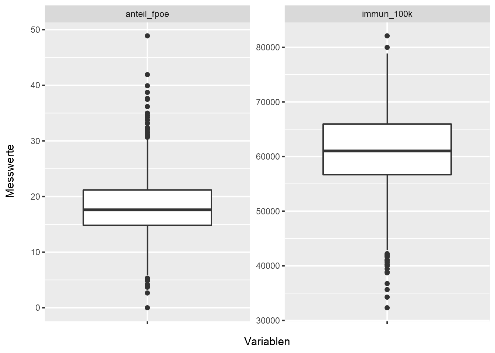</p>
<div class="sourceCode" id="cb123"><pre class="sourceCode r"><code class="sourceCode r"><span id="cb123-1"><a href="08_cluster_II_v2.html#cb123-1" aria-hidden="true" tabindex="-1"></a>daten <span class="sc">%&gt;%</span></span>
<span id="cb123-2"><a href="08_cluster_II_v2.html#cb123-2" aria-hidden="true" tabindex="-1"></a>  <span class="fu">group_by</span>(ur_metatypus) <span class="sc">%&gt;%</span></span>
<span id="cb123-3"><a href="08_cluster_II_v2.html#cb123-3" aria-hidden="true" tabindex="-1"></a>  <span class="fu">summarise</span>(<span class="at">n =</span> <span class="fu">n</span>(), <span class="at">.groups =</span> <span class="st">&quot;drop&quot;</span>) <span class="sc">%&gt;%</span></span>
<span id="cb123-4"><a href="08_cluster_II_v2.html#cb123-4" aria-hidden="true" tabindex="-1"></a>  <span class="fu">ggplot</span>(. , <span class="fu">aes</span>(<span class="at">x =</span> <span class="st">&quot;&quot;</span>, <span class="at">y =</span> n, <span class="at">fill =</span> ur_metatypus)) <span class="sc">+</span></span>
<span id="cb123-5"><a href="08_cluster_II_v2.html#cb123-5" aria-hidden="true" tabindex="-1"></a>  <span class="fu">geom_bar</span>(<span class="at">stat =</span> <span class="st">&quot;identity&quot;</span>, <span class="at">position =</span> <span class="st">&#39;fill&#39;</span>) <span class="sc">+</span></span>
<span id="cb123-6"><a href="08_cluster_II_v2.html#cb123-6" aria-hidden="true" tabindex="-1"></a>  <span class="fu">labs</span>(<span class="at">x =</span> <span class="st">&quot;ur_typus&quot;</span>, <span class="at">y =</span> <span class="st">&quot;Anteile [%]&quot;</span>)</span></code></pre></div>
<p>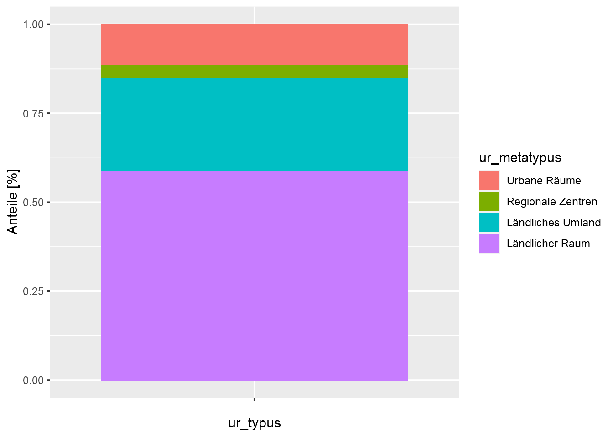</p>
<p>Wir sehen, dass vor allem die qualitative Variable ur_metatypus nur bedingt streut. Dieser “Quasi-Konstanz” (mehr als 50% der Gemeinden liegen im “Ländlichen Raum”) werden wir im weiteren Verlauf der Analyse besondere Aufmerksamkeit widmen.</p>
<p>Da die beiden metrischen Variablen auf unterschiedlichen Messskalen gemessen werden, nehmen mir eine z-Transformation vor. Dadurch können wir eine (unabsichtliche) Gewichtung dieser beiden Variablen verhindern:</p>
<div class="sourceCode" id="cb124"><pre class="sourceCode r"><code class="sourceCode r"><span id="cb124-1"><a href="08_cluster_II_v2.html#cb124-1" aria-hidden="true" tabindex="-1"></a>daten_trans <span class="ot">&lt;-</span> daten <span class="sc">%&gt;%</span></span>
<span id="cb124-2"><a href="08_cluster_II_v2.html#cb124-2" aria-hidden="true" tabindex="-1"></a>  <span class="fu">select</span>(gem_id, gem_txt, <span class="fu">all_of</span>(myVars)) <span class="sc">%&gt;%</span></span>
<span id="cb124-3"><a href="08_cluster_II_v2.html#cb124-3" aria-hidden="true" tabindex="-1"></a>  <span class="fu">mutate</span>(<span class="fu">across</span>(<span class="fu">all_of</span>(myQuantVars), scale)) <span class="sc">%&gt;%</span></span>
<span id="cb124-4"><a href="08_cluster_II_v2.html#cb124-4" aria-hidden="true" tabindex="-1"></a>  <span class="fu">mutate_if</span>(is.matrix, as.numeric)  <span class="co"># scale liefert eine Matrix und keinen numeric &gt; wieder zurückstellen</span></span></code></pre></div>
<p>Zuletzt wollen wir noch einen Blick auf die Korrelationen zwischen unseren metrischen Clustervariablen werfen:</p>
<div class="sourceCode" id="cb125"><pre class="sourceCode r"><code class="sourceCode r"><span id="cb125-1"><a href="08_cluster_II_v2.html#cb125-1" aria-hidden="true" tabindex="-1"></a><span class="fu">library</span>(GGally)</span>
<span id="cb125-2"><a href="08_cluster_II_v2.html#cb125-2" aria-hidden="true" tabindex="-1"></a><span class="fu">ggpairs</span>(daten, myQuantVars)</span></code></pre></div>
<p>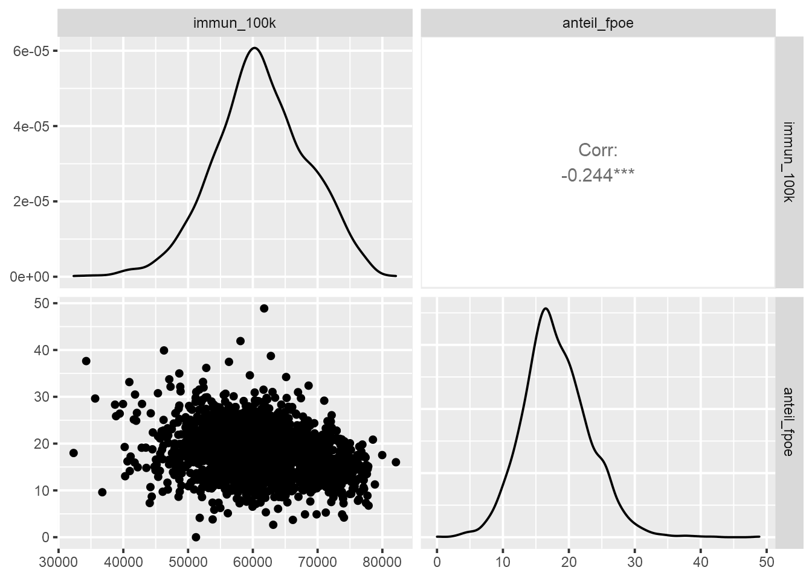</p>
<p>Gemäß unser Daumenregel “Keine Korrelation stärker als +/- 0,8” sehen wir, dass beide Variablen in die Clusterung eingehen können.</p>
</div>
<div id="ermittlung-der-ähnlichkeiten" class="section level2 hasAnchor" number="8.7">
<h2><span class="header-section-number">8.7</span> Ermittlung der Ähnlichkeiten<a href="08_cluster_II_v2.html#ermittlung-der-ähnlichkeiten" class="anchor-section" aria-label="Anchor link to header"></a></h2>
<p>Bevor wir die Ähnlichkeiten zwischen den Gemeinden ermittel können, müssen wir noch eine kleine Änderung an unserem Datensatz vornehmen: Um bei den weiterführenden Berechnung den Gemeindecode automatisch als Label nutzen zu können, muss dieser als Zeilenname (“Rowname”) hinterlegt werden:</p>
<div class="sourceCode" id="cb126"><pre class="sourceCode r"><code class="sourceCode r"><span id="cb126-1"><a href="08_cluster_II_v2.html#cb126-1" aria-hidden="true" tabindex="-1"></a>daten_trans_fit0 <span class="ot">&lt;-</span> daten_trans <span class="sc">%&gt;%</span></span>
<span id="cb126-2"><a href="08_cluster_II_v2.html#cb126-2" aria-hidden="true" tabindex="-1"></a>  <span class="fu">mutate</span>(<span class="at">gem_id_rows =</span> gem_id) <span class="sc">%&gt;%</span></span>
<span id="cb126-3"><a href="08_cluster_II_v2.html#cb126-3" aria-hidden="true" tabindex="-1"></a>  tibble<span class="sc">::</span><span class="fu">column_to_rownames</span>(<span class="st">&quot;gem_id_rows&quot;</span>)</span></code></pre></div>
<p>Aufgrund der unterschiedlichen Skalen unserer Clustervariablen nutzen wir zur Abbildung der (Un-)Ähnlichkeit unserer Gemeinden die eingangs beschriebene <strong>Gower-Distanz</strong>:</p>
<div class="sourceCode" id="cb127"><pre class="sourceCode r"><code class="sourceCode r"><span id="cb127-1"><a href="08_cluster_II_v2.html#cb127-1" aria-hidden="true" tabindex="-1"></a><span class="fu">library</span>(cluster)</span>
<span id="cb127-2"><a href="08_cluster_II_v2.html#cb127-2" aria-hidden="true" tabindex="-1"></a>gower_dist_fit0 <span class="ot">&lt;-</span> <span class="fu">daisy</span>(daten_trans_fit0[myVars], <span class="at">metric =</span> <span class="st">&quot;gower&quot;</span>)</span>
<span id="cb127-3"><a href="08_cluster_II_v2.html#cb127-3" aria-hidden="true" tabindex="-1"></a><span class="fu">summary</span>(gower_dist_fit0)</span></code></pre></div>
<pre><code>## 2193465 dissimilarities, summarized :
##      Min.   1st Qu.    Median      Mean   3rd Qu. 
## 0.0000738 0.0987200 0.3686500 0.2832600 0.4237300 
##      Max. 
## 0.8293500 
## Metric :  mixed ;  Types = I, I, N 
## Number of objects : 2095</code></pre>
<p>Die Summary zeigt uns, dass die Skalen unserer Clustervariablen korrekt erkannt wurden: Types = I, I, N steht für zwei intervall- und eine nominal skalierte Variable. Ein Blick auf die Minima und Maxima zeigt uns, dass sehr ähnliche (Minimum nahe bei 0) und unähnliche (Maximum nahe bei 1) in unserem Datensatz enthalten sind.</p>
<p>Ausgehend von diesen Ähnlichkeiten können wir uns als nächstes auf die Suche nach möglichen Ausreißern machen.</p>
</div>
<div id="identifikation-von-ausreißern" class="section level2 hasAnchor" number="8.8">
<h2><span class="header-section-number">8.8</span> Identifikation von Ausreißern<a href="08_cluster_II_v2.html#identifikation-von-ausreißern" class="anchor-section" aria-label="Anchor link to header"></a></h2>
<p>Hierzu greifen wir wieder auf eine einfache Single-Linkage Clusterung zurück:</p>
<div class="sourceCode" id="cb129"><pre class="sourceCode r"><code class="sourceCode r"><span id="cb129-1"><a href="08_cluster_II_v2.html#cb129-1" aria-hidden="true" tabindex="-1"></a>fit0 <span class="ot">&lt;-</span> <span class="fu">hclust</span>(gower_dist_fit0, <span class="at">method =</span> <span class="st">&quot;single&quot;</span>)</span>
<span id="cb129-2"><a href="08_cluster_II_v2.html#cb129-2" aria-hidden="true" tabindex="-1"></a><span class="fu">plot</span>(fit0, <span class="at">main =</span> <span class="st">&quot;Single Linkage Clusterung&quot;</span>, <span class="at">cex =</span> <span class="fl">0.65</span>)</span></code></pre></div>
<p>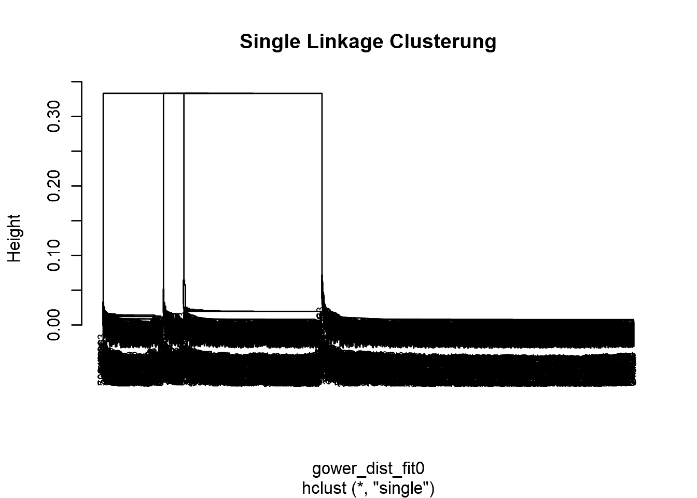</p>
<p>Aufgrund der hohen Anzahl an Merkmalsträgern gestaltet sich hier die rein visuelle Interpretation des Dendrogramms als nicht sehr ergiebig 🙄.</p>
<p>Wir können uns aber den Fusionierungsverlauf numerisch über eine Funktion als sgn. “Agglomeration Schedule” darstellen lassen:</p>
<div class="sourceCode" id="cb130"><pre class="sourceCode r"><code class="sourceCode r"><span id="cb130-1"><a href="08_cluster_II_v2.html#cb130-1" aria-hidden="true" tabindex="-1"></a>get.agglo <span class="ot">&lt;-</span> <span class="cf">function</span>(clustermodell){</span>
<span id="cb130-2"><a href="08_cluster_II_v2.html#cb130-2" aria-hidden="true" tabindex="-1"></a>  <span class="fu">data.frame</span>(<span class="at">row.names=</span><span class="fu">paste0</span>(<span class="st">&quot;Cluster&quot;</span>,<span class="fu">seq_along</span>(clustermodell<span class="sc">$</span>height)),</span>
<span id="cb130-3"><a href="08_cluster_II_v2.html#cb130-3" aria-hidden="true" tabindex="-1"></a>             <span class="at">height=</span>clustermodell<span class="sc">$</span>height,</span>
<span id="cb130-4"><a href="08_cluster_II_v2.html#cb130-4" aria-hidden="true" tabindex="-1"></a>             <span class="at">components=</span><span class="fu">ifelse</span>(clustermodell<span class="sc">$</span>merge<span class="sc">&lt;</span><span class="dv">0</span>, clustermodell<span class="sc">$</span>labels[<span class="fu">abs</span>(clustermodell<span class="sc">$</span>merge)],</span>
<span id="cb130-5"><a href="08_cluster_II_v2.html#cb130-5" aria-hidden="true" tabindex="-1"></a>                               <span class="fu">paste0</span>(<span class="st">&quot;Cluster&quot;</span>,clustermodell<span class="sc">$</span>merge)),</span>
<span id="cb130-6"><a href="08_cluster_II_v2.html#cb130-6" aria-hidden="true" tabindex="-1"></a>             <span class="at">stringsAsFactors=</span><span class="cn">FALSE</span>)</span>
<span id="cb130-7"><a href="08_cluster_II_v2.html#cb130-7" aria-hidden="true" tabindex="-1"></a>}</span>
<span id="cb130-8"><a href="08_cluster_II_v2.html#cb130-8" aria-hidden="true" tabindex="-1"></a></span>
<span id="cb130-9"><a href="08_cluster_II_v2.html#cb130-9" aria-hidden="true" tabindex="-1"></a><span class="fu">tail</span>(<span class="fu">get.agglo</span>(fit0), <span class="dv">10</span>)</span></code></pre></div>
<pre><code>##                 height components.1 components.2
## Cluster2085 0.04755299        40435  Cluster2084
## Cluster2086 0.05177661        10920  Cluster2079
## Cluster2087 0.05776771        80212  Cluster2066
## Cluster2088 0.06155142        70625  Cluster2085
## Cluster2089 0.06383148        20636  Cluster2088
## Cluster2090 0.06477821        20703  Cluster2087
## Cluster2091 0.07203631        20503  Cluster2089
## Cluster2092 0.33344747  Cluster2090  Cluster2091
## Cluster2093 0.33350334  Cluster2086  Cluster2092
## Cluster2094 0.33351972  Cluster2080  Cluster2093</code></pre>
<p>Wir sehen, dass die Gemeinde 20503 als letzte verbleibende Gemeinde einem Cluster zugeordnet wurde. Ein Blick auf den Verlauf der Variable “height” - also dem Ansteigen Heterogenität der gefundenen Clusterlösungen - zeigt uns keine drastischen Veränderungen. Wir können damit keine Ausreißer ausmachen und müssen daher auch keine Gemeinden vorab aus dem Datensatz entfernen.</p>
<p>Und damit kommen wir …</p>
</div>
<div id="clusterung-der-gemeinden" class="section level2 hasAnchor" number="8.9">
<h2><span class="header-section-number">8.9</span> Clusterung der Gemeinden<a href="08_cluster_II_v2.html#clusterung-der-gemeinden" class="anchor-section" aria-label="Anchor link to header"></a></h2>
<p>Um ähnlich besetzte Cluster zu erhalten, greifen wir dabei auf den <strong>Ward-Algorithmus</strong> zur Fusionierung zurück:</p>
<div class="sourceCode" id="cb132"><pre class="sourceCode r"><code class="sourceCode r"><span id="cb132-1"><a href="08_cluster_II_v2.html#cb132-1" aria-hidden="true" tabindex="-1"></a>fit1 <span class="ot">&lt;-</span> <span class="fu">hclust</span>(gower_dist_fit0, <span class="at">method=</span><span class="st">&quot;ward.D2&quot;</span>)</span>
<span id="cb132-2"><a href="08_cluster_II_v2.html#cb132-2" aria-hidden="true" tabindex="-1"></a><span class="fu">plot</span>(fit1, <span class="at">main =</span> <span class="st">&quot;Ward-Clusterung&quot;</span>, <span class="at">cex =</span> <span class="fl">0.5</span>)</span></code></pre></div>
<p>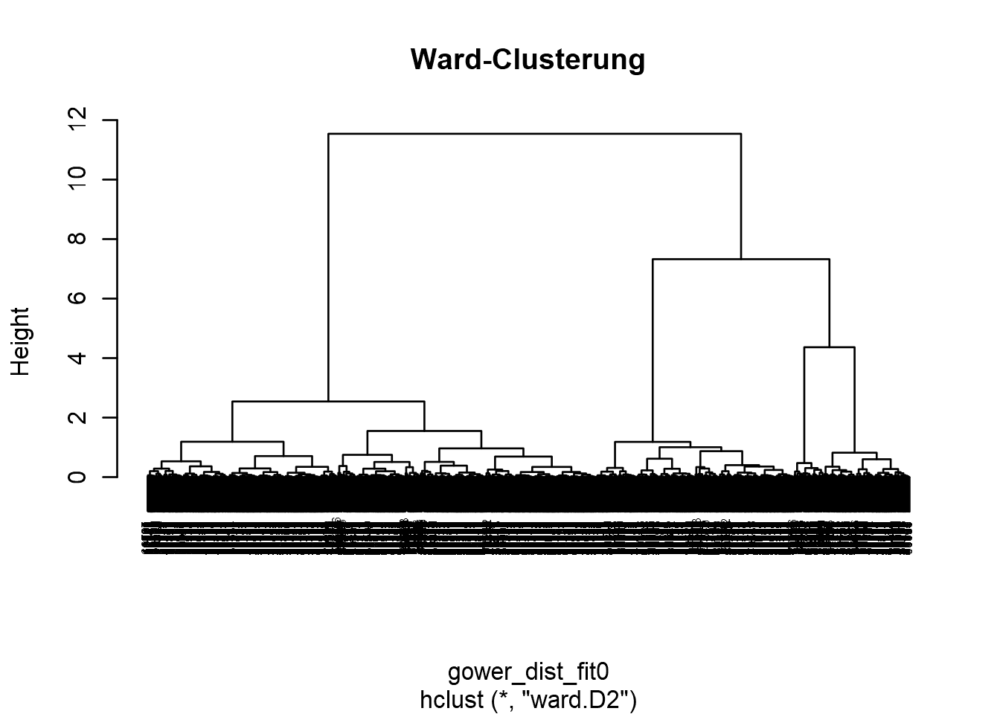</p>
<p>Ein Blick auf das Dendrogramm deutet uns zwei große Gruppen mit mehreren Untergruppen an. Um die Anzahl der zu wählenden Cluster zu bestimmen erstellen wir das aus Kapitel <a href="07_cluster_I.html#cluster1">7</a> bekannte <strong>Elbow-Diagramm</strong>:</p>
<div class="sourceCode" id="cb133"><pre class="sourceCode r"><code class="sourceCode r"><span id="cb133-1"><a href="08_cluster_II_v2.html#cb133-1" aria-hidden="true" tabindex="-1"></a><span class="co"># Heterogenität der letzten 10 Schritte holen</span></span>
<span id="cb133-2"><a href="08_cluster_II_v2.html#cb133-2" aria-hidden="true" tabindex="-1"></a>height <span class="ot">&lt;-</span> <span class="fu">sort</span>(fit1<span class="sc">$</span>height)</span>
<span id="cb133-3"><a href="08_cluster_II_v2.html#cb133-3" aria-hidden="true" tabindex="-1"></a>Schritt <span class="ot">&lt;-</span> <span class="fu">c</span>(<span class="dv">10</span><span class="sc">:</span><span class="dv">1</span>)</span>
<span id="cb133-4"><a href="08_cluster_II_v2.html#cb133-4" aria-hidden="true" tabindex="-1"></a>height <span class="ot">&lt;-</span> height[(<span class="fu">length</span>(height)<span class="sc">-</span><span class="dv">9</span>)<span class="sc">:</span><span class="fu">length</span>(height)]</span>
<span id="cb133-5"><a href="08_cluster_II_v2.html#cb133-5" aria-hidden="true" tabindex="-1"></a>screeplot_data_1 <span class="ot">&lt;-</span> <span class="fu">data.frame</span>(Schritt, height)</span>
<span id="cb133-6"><a href="08_cluster_II_v2.html#cb133-6" aria-hidden="true" tabindex="-1"></a><span class="co"># plotten</span></span>
<span id="cb133-7"><a href="08_cluster_II_v2.html#cb133-7" aria-hidden="true" tabindex="-1"></a><span class="fu">ggplot</span>(screeplot_data_1, <span class="fu">aes</span>(<span class="at">x=</span>Schritt, <span class="at">y=</span>height)) <span class="sc">+</span></span>
<span id="cb133-8"><a href="08_cluster_II_v2.html#cb133-8" aria-hidden="true" tabindex="-1"></a>  <span class="fu">geom_line</span>(<span class="at">size=</span><span class="dv">1</span>) <span class="sc">+</span></span>
<span id="cb133-9"><a href="08_cluster_II_v2.html#cb133-9" aria-hidden="true" tabindex="-1"></a>  <span class="fu">scale_x_continuous</span>(<span class="at">breaks=</span>Schritt) <span class="sc">+</span></span>
<span id="cb133-10"><a href="08_cluster_II_v2.html#cb133-10" aria-hidden="true" tabindex="-1"></a>  <span class="fu">labs</span>(<span class="at">title =</span> <span class="st">&quot;Elbow-Diagramm&quot;</span>, <span class="at">x =</span> <span class="st">&quot;Anzhal Cluster&quot;</span>) <span class="sc">+</span></span>
<span id="cb133-11"><a href="08_cluster_II_v2.html#cb133-11" aria-hidden="true" tabindex="-1"></a>  <span class="fu">geom_vline</span>(<span class="at">xintercept=</span><span class="dv">6</span>, <span class="at">color =</span> <span class="st">&quot;red&quot;</span>)</span></code></pre></div>
<p>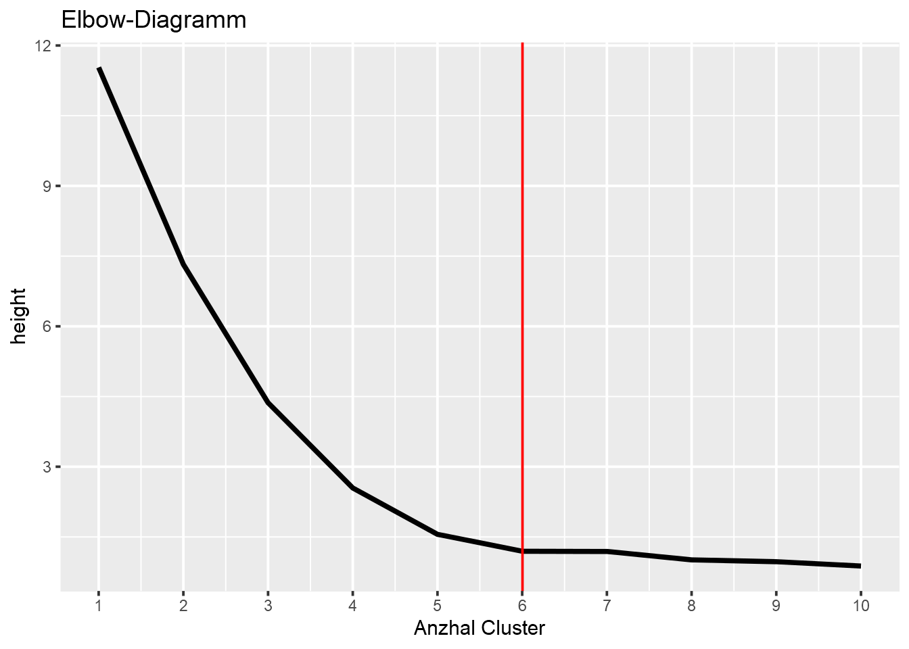</p>
<p>Um einen möglichst detailliert bei der Evaluation der “Hillbilly-These” vorgehen zu können, entscheiden wir uns für 6 Cluster.</p>
<div class="sourceCode" id="cb134"><pre class="sourceCode r"><code class="sourceCode r"><span id="cb134-1"><a href="08_cluster_II_v2.html#cb134-1" aria-hidden="true" tabindex="-1"></a>nCluster <span class="ot">&lt;-</span> <span class="dv">6</span></span>
<span id="cb134-2"><a href="08_cluster_II_v2.html#cb134-2" aria-hidden="true" tabindex="-1"></a><span class="co"># Dendorgramm erstellen</span></span>
<span id="cb134-3"><a href="08_cluster_II_v2.html#cb134-3" aria-hidden="true" tabindex="-1"></a><span class="fu">plot</span>(fit1, <span class="at">cex =</span> <span class="fl">0.75</span>, <span class="at">main =</span> <span class="st">&quot;Ward Clusterung&quot;</span>)</span>
<span id="cb134-4"><a href="08_cluster_II_v2.html#cb134-4" aria-hidden="true" tabindex="-1"></a><span class="fu">rect.hclust</span>(fit1, <span class="at">k =</span> nCluster, <span class="at">border=</span><span class="st">&quot;red&quot;</span>)</span></code></pre></div>
<p>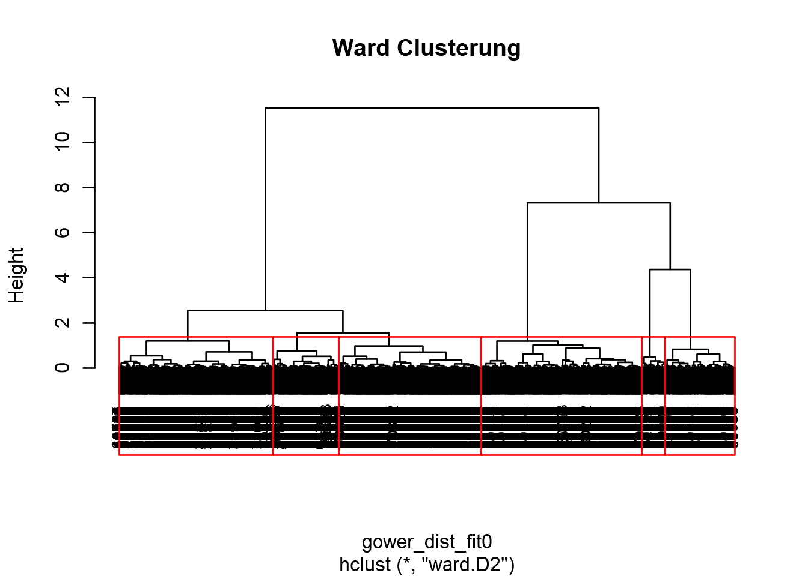</p>
<p>Diese Lösung liefert uns …</p>
<div class="sourceCode" id="cb135"><pre class="sourceCode r"><code class="sourceCode r"><span id="cb135-1"><a href="08_cluster_II_v2.html#cb135-1" aria-hidden="true" tabindex="-1"></a><span class="fu">table</span>(<span class="fu">cutree</span>(fit1, <span class="at">k =</span> nCluster))</span></code></pre></div>
<pre><code>## 
##   1   2   3   4   5   6 
## 238 524 546 223  79 485</code></pre>
<p>… drei stark, zwei mittel und einen schwach besetzten Cluster.</p>
<p>Diese Cluster speichern wir zunächst in den (nicht-)transformierten Datenframes ab:</p>
<div class="sourceCode" id="cb137"><pre class="sourceCode r"><code class="sourceCode r"><span id="cb137-1"><a href="08_cluster_II_v2.html#cb137-1" aria-hidden="true" tabindex="-1"></a><span class="co"># zunächst in den zur Berechnung genutzten Datenframe</span></span>
<span id="cb137-2"><a href="08_cluster_II_v2.html#cb137-2" aria-hidden="true" tabindex="-1"></a>daten_trans_fit0<span class="sc">$</span>fit1_cl6 <span class="ot">&lt;-</span> <span class="fu">as_factor</span>(<span class="fu">cutree</span>(fit1, <span class="at">k =</span> nCluster))</span>
<span id="cb137-3"><a href="08_cluster_II_v2.html#cb137-3" aria-hidden="true" tabindex="-1"></a><span class="co"># dann per join (sicherer bei Ausreißern) im transformierten Ausgangsdatensatz</span></span>
<span id="cb137-4"><a href="08_cluster_II_v2.html#cb137-4" aria-hidden="true" tabindex="-1"></a>daten_trans <span class="ot">&lt;-</span> daten_trans_fit0 <span class="sc">%&gt;%</span></span>
<span id="cb137-5"><a href="08_cluster_II_v2.html#cb137-5" aria-hidden="true" tabindex="-1"></a>  <span class="fu">select</span>(gem_id, fit1_cl6) <span class="sc">%&gt;%</span></span>
<span id="cb137-6"><a href="08_cluster_II_v2.html#cb137-6" aria-hidden="true" tabindex="-1"></a>  <span class="fu">left_join</span>(daten_trans, ., <span class="at">by =</span> <span class="st">&quot;gem_id&quot;</span>)</span>
<span id="cb137-7"><a href="08_cluster_II_v2.html#cb137-7" aria-hidden="true" tabindex="-1"></a><span class="co"># ... und noch auf die nicht-transformierten Daten</span></span>
<span id="cb137-8"><a href="08_cluster_II_v2.html#cb137-8" aria-hidden="true" tabindex="-1"></a>daten <span class="ot">&lt;-</span> daten_trans <span class="sc">%&gt;%</span></span>
<span id="cb137-9"><a href="08_cluster_II_v2.html#cb137-9" aria-hidden="true" tabindex="-1"></a>  <span class="fu">select</span>(gem_id, fit1_cl6) <span class="sc">%&gt;%</span></span>
<span id="cb137-10"><a href="08_cluster_II_v2.html#cb137-10" aria-hidden="true" tabindex="-1"></a>  <span class="fu">left_join</span>(daten, ., <span class="at">by =</span> <span class="st">&quot;gem_id&quot;</span>)</span></code></pre></div>
</div>
<div id="beurteilung-der-trennschärfe-der-gewählten-clusteranzahl" class="section level2 hasAnchor" number="8.10">
<h2><span class="header-section-number">8.10</span> Beurteilung der Trennschärfe der gewählten Clusteranzahl<a href="08_cluster_II_v2.html#beurteilung-der-trennschärfe-der-gewählten-clusteranzahl" class="anchor-section" aria-label="Anchor link to header"></a></h2>
<p>Bevor wir zur Charakterisierung der Cluster übergehen, wollen wir zunächst noch ein Bild von der Güte - also der Trennschärfe - der gewählten Clusteranzahl kommen. In Kapitel <a href="07_cluster_I.html#cluster1">7</a> konnten wir dazu für rein metrische Variablen auf eine Hauptkomponentenanalyse zurückgreifen. Diese Vorgehensweise können wir hier nicht erneut anwenden, da unsere Clustervariablen ja zu Teilen auch nominal skaliert sind.</p>
<p>Glücklicherweise können solche gemischtskaliges Datenset - genauer gesagt: die Distanzen zwischen den Merkmalsträgern eines solchen Sets - mittels des <a href="https://en.wikipedia.org/wiki/T-distributed_stochastic_neighbor_embedding"><strong>t-distributed stochastic neighbor embedding</strong> Verfahrens</a> in einem zweidimensionalen Raum abgebildet werden. Dieses Verfahren versucht mehrdimesionale Objekte (in unserem Fall: 3) so zweidimensional abzubilden, dass ähnliche Objekte nahe und unähnliche weit voneinander entfernt zu liegen kommen.</p>
<blockquote>
<p><strong>👉 Tipp:</strong><br />
Da es sich dabei um ein stochastisches Verfahren handelt, empfiehlt es sich in R mittels set.seed einen Ausgangspunkt für die Ermittlung von Zufallszahlen zu setzen. Hierdurch wird - trotz stochastischer Verfahren - die <strong>Reproduzierbarkeit</strong> der Ergebnisse sichergestellt.</p>
</blockquote>
<p>Über das Package <strong>Rtsne</strong> bietet uns eine gelungene Implementierung des t-distributed stochastic neighbor embeddings:</p>
<div class="sourceCode" id="cb138"><pre class="sourceCode r"><code class="sourceCode r"><span id="cb138-1"><a href="08_cluster_II_v2.html#cb138-1" aria-hidden="true" tabindex="-1"></a><span class="fu">library</span>(Rtsne)</span>
<span id="cb138-2"><a href="08_cluster_II_v2.html#cb138-2" aria-hidden="true" tabindex="-1"></a><span class="fu">set.seed</span>(<span class="dv">1976</span>)</span>
<span id="cb138-3"><a href="08_cluster_II_v2.html#cb138-3" aria-hidden="true" tabindex="-1"></a></span>
<span id="cb138-4"><a href="08_cluster_II_v2.html#cb138-4" aria-hidden="true" tabindex="-1"></a>tsne_obj <span class="ot">&lt;-</span> <span class="fu">Rtsne</span>(gower_dist_fit0, <span class="at">is_distance =</span> <span class="cn">TRUE</span>)</span>
<span id="cb138-5"><a href="08_cluster_II_v2.html#cb138-5" aria-hidden="true" tabindex="-1"></a></span>
<span id="cb138-6"><a href="08_cluster_II_v2.html#cb138-6" aria-hidden="true" tabindex="-1"></a>tsne_data <span class="ot">&lt;-</span> tsne_obj<span class="sc">$</span>Y <span class="sc">%&gt;%</span></span>
<span id="cb138-7"><a href="08_cluster_II_v2.html#cb138-7" aria-hidden="true" tabindex="-1"></a>  <span class="fu">data.frame</span>() <span class="sc">%&gt;%</span></span>
<span id="cb138-8"><a href="08_cluster_II_v2.html#cb138-8" aria-hidden="true" tabindex="-1"></a>  <span class="fu">setNames</span>(<span class="fu">c</span>(<span class="st">&quot;X&quot;</span>, <span class="st">&quot;Y&quot;</span>)) <span class="sc">%&gt;%</span></span>
<span id="cb138-9"><a href="08_cluster_II_v2.html#cb138-9" aria-hidden="true" tabindex="-1"></a>  <span class="fu">mutate</span>(<span class="at">cluster =</span> daten_trans_fit0<span class="sc">$</span>fit1_cl6,</span>
<span id="cb138-10"><a href="08_cluster_II_v2.html#cb138-10" aria-hidden="true" tabindex="-1"></a>         <span class="at">name =</span> daten_trans_fit0<span class="sc">$</span>gem_id)</span>
<span id="cb138-11"><a href="08_cluster_II_v2.html#cb138-11" aria-hidden="true" tabindex="-1"></a></span>
<span id="cb138-12"><a href="08_cluster_II_v2.html#cb138-12" aria-hidden="true" tabindex="-1"></a><span class="fu">ggplot</span>(tsne_data, <span class="fu">aes</span>(<span class="at">x =</span> X, <span class="at">y =</span> Y)) <span class="sc">+</span></span>
<span id="cb138-13"><a href="08_cluster_II_v2.html#cb138-13" aria-hidden="true" tabindex="-1"></a>  <span class="fu">geom_point</span>(<span class="fu">aes</span>(<span class="at">color =</span> cluster))</span></code></pre></div>
<p>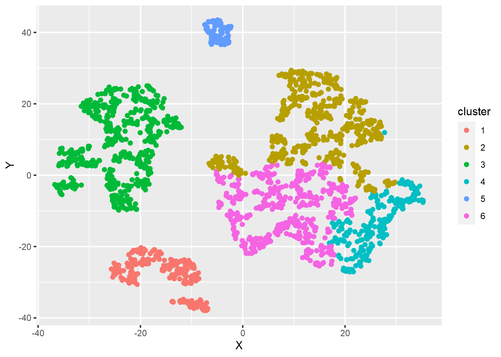</p>
<p>Wir sehen dass 3 der 6 Cluster (1, 3 &amp; 5) sich deutlich von den anderen Clustern unterscheiden. Die Cluster 2, 4 &amp; 6 sind in sich großteils homogen, lassen sich aber nicht so klar von einander unterscheiden wie die Cluster 1, 3 &amp; 5. Speziell in Hinblick auf die geringe Streuung der Variable ur_metatypus kann diese Trennschärfe als noch akzeptabel bezeichnet werden.</p>
</div>
<div id="charakterisierung-der-cluster" class="section level2 hasAnchor" number="8.11">
<h2><span class="header-section-number">8.11</span> Charakterisierung der Cluster<a href="08_cluster_II_v2.html#charakterisierung-der-cluster" class="anchor-section" aria-label="Anchor link to header"></a></h2>
<p>Werfen wir nun einen ersten numerischen Blick auf unsere Cluster:</p>
<div class="sourceCode" id="cb139"><pre class="sourceCode r"><code class="sourceCode r"><span id="cb139-1"><a href="08_cluster_II_v2.html#cb139-1" aria-hidden="true" tabindex="-1"></a>daten <span class="sc">%&gt;%</span></span>
<span id="cb139-2"><a href="08_cluster_II_v2.html#cb139-2" aria-hidden="true" tabindex="-1"></a>  <span class="fu">group_by</span>(fit1_cl6) <span class="sc">%&gt;%</span></span>
<span id="cb139-3"><a href="08_cluster_II_v2.html#cb139-3" aria-hidden="true" tabindex="-1"></a>  <span class="fu">summarise</span>(<span class="fu">across</span>(<span class="fu">all_of</span>(myQuantVars), median), <span class="at">.groups =</span> <span class="st">&quot;keep&quot;</span>)</span></code></pre></div>
<pre><code>## # A tibble: 6 x 3
## # Groups:   fit1_cl6 [6]
##   fit1_cl6 immun_100k anteil_fpoe
##   &lt;fct&gt;         &lt;dbl&gt;       &lt;dbl&gt;
## 1 1            61918.        16.9
## 2 2            65985.        16.5
## 3 3            63036.        17.0
## 4 4            56242.        25.9
## 5 5            62600.        17.8
## 6 6            55732.        17.2</code></pre>
<p>Ein schneller Blick auf die Mediane zeigt uns, dass beim Anteil der FPÖ-WählerInnen nur Cluster 4 sich klar abheben kann: In diesem Cluster sammeln sich Gemeinden mit einem klar überdurchschnittlichen FPÖ-Stimmenanteil. Gleichzeitig weist dieser Cluster auch eine geringe Immunisierungsrate auf.</p>
<p>Das ganze noch graphisch - zunächst mit den transformierten Daten:</p>
<div class="sourceCode" id="cb141"><pre class="sourceCode r"><code class="sourceCode r"><span id="cb141-1"><a href="08_cluster_II_v2.html#cb141-1" aria-hidden="true" tabindex="-1"></a>daten_trans <span class="sc">%&gt;%</span></span>
<span id="cb141-2"><a href="08_cluster_II_v2.html#cb141-2" aria-hidden="true" tabindex="-1"></a>  <span class="fu">group_by</span>(fit1_cl6) <span class="sc">%&gt;%</span></span>
<span id="cb141-3"><a href="08_cluster_II_v2.html#cb141-3" aria-hidden="true" tabindex="-1"></a>  <span class="fu">summarise</span>(<span class="fu">across</span>(<span class="fu">all_of</span>(myQuantVars), mean), <span class="at">.groups=</span><span class="st">&quot;keep&quot;</span>) <span class="sc">%&gt;%</span></span>
<span id="cb141-4"><a href="08_cluster_II_v2.html#cb141-4" aria-hidden="true" tabindex="-1"></a>  <span class="fu">pivot_longer</span>(<span class="fu">all_of</span>(myQuantVars), <span class="at">names_to =</span> <span class="st">&quot;variable&quot;</span>, <span class="at">values_to =</span><span class="st">&quot;wert&quot;</span>) <span class="sc">%&gt;%</span></span>
<span id="cb141-5"><a href="08_cluster_II_v2.html#cb141-5" aria-hidden="true" tabindex="-1"></a>  <span class="fu">ggplot</span>(., <span class="fu">aes</span>(<span class="at">x=</span>variable, <span class="at">y=</span>wert, <span class="at">fill=</span>variable)) <span class="sc">+</span></span>
<span id="cb141-6"><a href="08_cluster_II_v2.html#cb141-6" aria-hidden="true" tabindex="-1"></a>  <span class="fu">geom_bar</span>(<span class="at">stat =</span> <span class="st">&quot;identity&quot;</span>) <span class="sc">+</span></span>
<span id="cb141-7"><a href="08_cluster_II_v2.html#cb141-7" aria-hidden="true" tabindex="-1"></a>  <span class="fu">theme</span>(<span class="at">axis.text.x =</span> <span class="fu">element_text</span>(<span class="at">angle =</span> <span class="dv">90</span>)) <span class="sc">+</span></span>
<span id="cb141-8"><a href="08_cluster_II_v2.html#cb141-8" aria-hidden="true" tabindex="-1"></a>  <span class="fu">facet_wrap</span>(<span class="sc">~</span> fit1_cl6)</span></code></pre></div>
<p>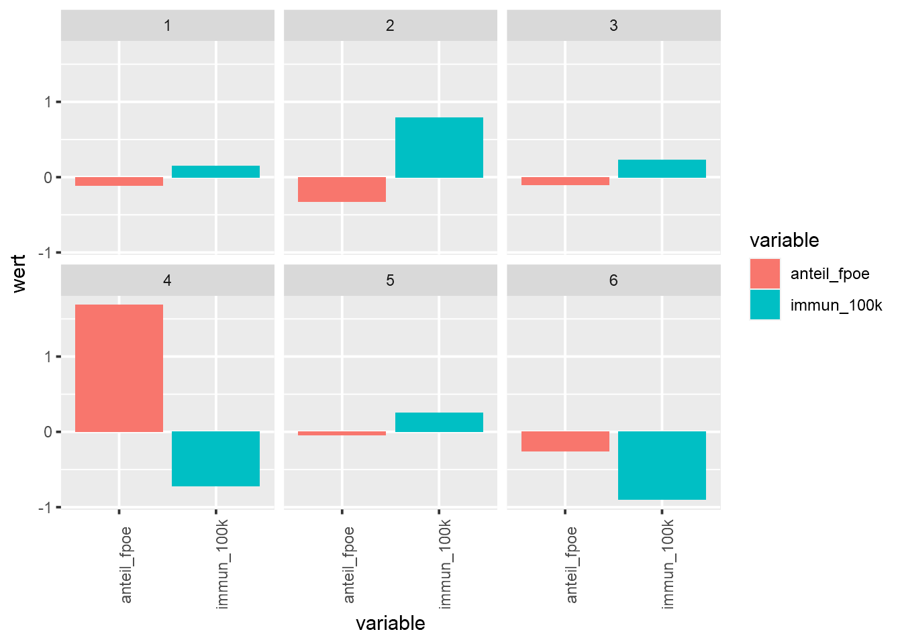</p>
<p>In Hinblick auf die zu evaluierende “Hillbilly-These” erscheint vor allem Cluster 4 interessant: Dieser weist eine überdurchschnittliche FPÖ-Affinität und eine unterdurchschnittliche Immunisierungsquote auf. Dieses Muster würde für die These sprechen. Gleichzeitig weist jedoch Cluster 6 eine leicht unterdurchschnittliche FPÖ-Affinität und die geringste Immunisierungsquote auf, was dieser These widersprechen würde.
neben den transformierten Daten empfiehlt es sich aber auch immer einen Blick auf die nicht-transformierten Werte zu legen:</p>
<div class="sourceCode" id="cb142"><pre class="sourceCode r"><code class="sourceCode r"><span id="cb142-1"><a href="08_cluster_II_v2.html#cb142-1" aria-hidden="true" tabindex="-1"></a><span class="fu">ggplot</span>(daten, <span class="fu">aes</span>(<span class="at">x =</span> fit1_cl6, <span class="at">y =</span> anteil_fpoe, <span class="at">fill =</span> fit1_cl6)) <span class="sc">+</span></span>
<span id="cb142-2"><a href="08_cluster_II_v2.html#cb142-2" aria-hidden="true" tabindex="-1"></a>  <span class="fu">geom_boxplot</span>(<span class="at">outlier.shape =</span> <span class="cn">NA</span>) <span class="sc">+</span></span>
<span id="cb142-3"><a href="08_cluster_II_v2.html#cb142-3" aria-hidden="true" tabindex="-1"></a>  <span class="fu">labs</span>(<span class="at">title =</span> <span class="st">&quot;anteil_fpoe&quot;</span>, <span class="at">x =</span> <span class="st">&quot;Cluster&quot;</span>) <span class="sc">+</span></span>
<span id="cb142-4"><a href="08_cluster_II_v2.html#cb142-4" aria-hidden="true" tabindex="-1"></a>  <span class="fu">geom_jitter</span>(<span class="at">width=</span><span class="fl">0.2</span>,<span class="at">alpha=</span><span class="fl">0.15</span>, <span class="at">color=</span><span class="st">&quot;black&quot;</span>) <span class="sc">+</span></span>
<span id="cb142-5"><a href="08_cluster_II_v2.html#cb142-5" aria-hidden="true" tabindex="-1"></a>  <span class="fu">theme</span>(<span class="at">legend.position =</span> <span class="st">&quot;none&quot;</span>)</span></code></pre></div>
<p>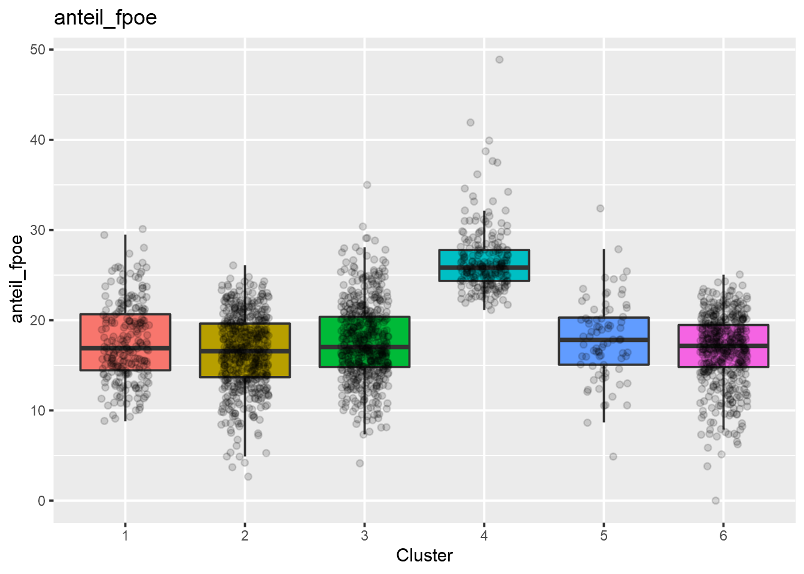</p>
<p>Dabei sehen wir, dass vor allem beim FPÖ-Stimmenanteil sich nur Cluster 4 klar von den restlichen Clustern abhebt.</p>
<div class="sourceCode" id="cb143"><pre class="sourceCode r"><code class="sourceCode r"><span id="cb143-1"><a href="08_cluster_II_v2.html#cb143-1" aria-hidden="true" tabindex="-1"></a><span class="fu">ggplot</span>(daten, <span class="fu">aes</span>(<span class="at">x =</span> fit1_cl6, <span class="at">y =</span> immun_100k, <span class="at">fill =</span> fit1_cl6)) <span class="sc">+</span></span>
<span id="cb143-2"><a href="08_cluster_II_v2.html#cb143-2" aria-hidden="true" tabindex="-1"></a>  <span class="fu">geom_boxplot</span>(<span class="at">outlier.shape =</span> <span class="cn">NA</span>) <span class="sc">+</span></span>
<span id="cb143-3"><a href="08_cluster_II_v2.html#cb143-3" aria-hidden="true" tabindex="-1"></a>  <span class="fu">labs</span>(<span class="at">title =</span> <span class="st">&quot;immun_100k&quot;</span>, <span class="at">x =</span> <span class="st">&quot;Cluster&quot;</span>) <span class="sc">+</span></span>
<span id="cb143-4"><a href="08_cluster_II_v2.html#cb143-4" aria-hidden="true" tabindex="-1"></a>  <span class="fu">geom_jitter</span>(<span class="at">width=</span><span class="fl">0.2</span>,<span class="at">alpha=</span><span class="fl">0.15</span>, <span class="at">color=</span><span class="st">&quot;black&quot;</span>) <span class="sc">+</span></span>
<span id="cb143-5"><a href="08_cluster_II_v2.html#cb143-5" aria-hidden="true" tabindex="-1"></a>  <span class="fu">theme</span>(<span class="at">legend.position =</span> <span class="st">&quot;none&quot;</span>)</span></code></pre></div>
<p>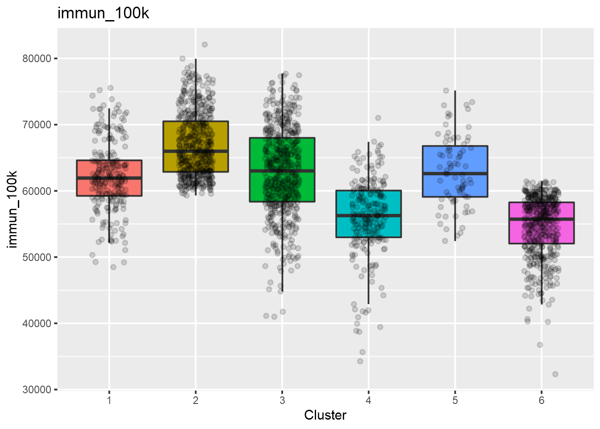</p>
<p>Ergänzt man dies um die Immunisierungsquote, zeigt sich, dass lediglich Cluster 4 der “Hillbilly-These” entspricht: Eine hohe FPÖ-Affinität trifft dort auf eine der geringsten Immunisierungsquoten.</p>
<p>Bleibe aber noch die Frage zu klären, wie viel “Hill” - also “Ländlichkeit” - in cluster 4 anzutreffen ist:</p>
<p>Dazu blicken wir auf die Verteilung der Raumtypen der Rural-Urban-Typologie in den Clustern …</p>
<div class="sourceCode" id="cb144"><pre class="sourceCode r"><code class="sourceCode r"><span id="cb144-1"><a href="08_cluster_II_v2.html#cb144-1" aria-hidden="true" tabindex="-1"></a><span class="fu">table</span>(daten<span class="sc">$</span>fit1_cl6, daten<span class="sc">$</span>ur_metatypus)</span></code></pre></div>
<pre><code>##    
##     Urbane Räume Regionale Zentren Ländliches Umland
##   1          238                 0                 0
##   2            0                 0                 0
##   3            0                 0               546
##   4            0                 0                 0
##   5            0                79                 0
##   6            0                 0                 0
##    
##     Ländlicher Raum
##   1               0
##   2             524
##   3               0
##   4             223
##   5               0
##   6             485</code></pre>
<p>Wir sehen, dass der Raumkategorie “Ländlicher Raum” auf drei Cluster aufgeteilt wurde. Die Cluster 1, 3 &amp; 5 decken damit sortenrein die restlichen 3 Rural-Urban-Typen ab. Die bei der Beurteilung der Cluster-Trennschärfe festgestellte Ähnlichkeit der Cluster 2, 4 &amp; 6 scheint sich damit aus der Zugehörigkeit zum “Ländlichen Raum” zu erklären.</p>
<p>Lösen wir die Rural-Urban-Typologie mithilfe der Variable “ur_typus” noch etwas feiner auf …</p>
<div class="sourceCode" id="cb146"><pre class="sourceCode r"><code class="sourceCode r"><span id="cb146-1"><a href="08_cluster_II_v2.html#cb146-1" aria-hidden="true" tabindex="-1"></a><span class="fu">ggplot</span>(daten, <span class="fu">aes</span>(<span class="at">x =</span> fit1_cl6, <span class="at">fill =</span> ur_typus)) <span class="sc">+</span></span>
<span id="cb146-2"><a href="08_cluster_II_v2.html#cb146-2" aria-hidden="true" tabindex="-1"></a>  <span class="fu">geom_bar</span>(<span class="at">position =</span> <span class="st">&quot;fill&quot;</span>)</span></code></pre></div>
<p>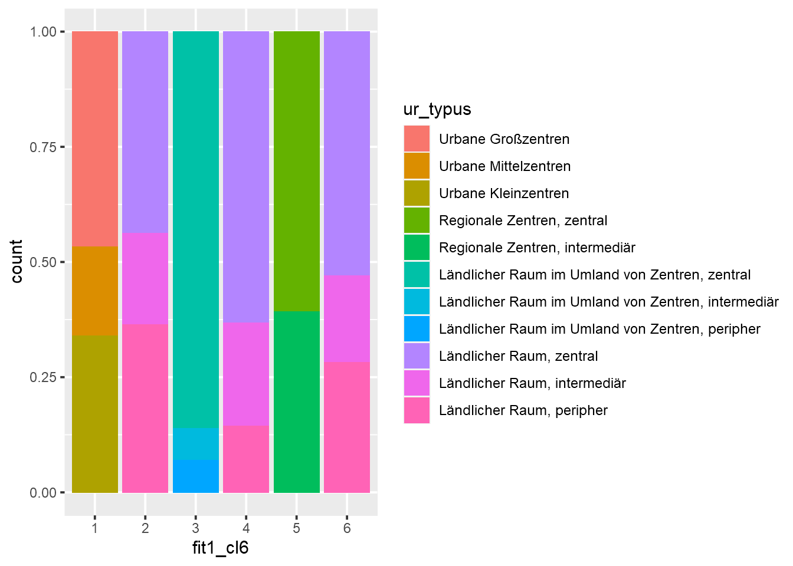</p>
<p>… sehen wir, dass doch ziemlich viel “Hill” in unserem Cluster 4 anzutreffen ist: Dieser besteht überwiegend aus zentral gelegenen ländlichen Räumen. Diese ausgewiesene “Ländlichkeit” erweist sich als durchaus passfähig zur “Hillbilly-These”. In Summe scheint unsere “Hillbilly-These” zu einem unserer 6 Cluster zu passen. Gleichzeitig sehen wir aber auch, dass auf die Mehrzahl der (auch ländlichen) Gemeinden diese These sich als nicht erklärungskräftig erweist.</p>
<p>In Summe zeigt sich hier klar der stark gruppenbildende Effekt der qualitativen Variable ur_metatyp. Die Cluster 1, 3 &amp; 5 stellen dadurch sortenreine Abbilder der Metatypen dieser Variable dar. Durch die gewählte Anzahl der Cluster wurde letztlich der “Ländliche Raum” auf die verbleibenden Cluster 2, 4 &amp; 6 aufgeteilt.</p>
<p>Werfen wir abschließend noch einen Blick auf die räumliche Verteilung dieser Cluster.</p>
</div>
<div id="die-räumliche-verteilung-der-cluster" class="section level2 hasAnchor" number="8.12">
<h2><span class="header-section-number">8.12</span> Die räumliche Verteilung der Cluster<a href="08_cluster_II_v2.html#die-räumliche-verteilung-der-cluster" class="anchor-section" aria-label="Anchor link to header"></a></h2>
<p>Um unsere zumindest zu Teilen nicht widerlegte “Hillbilly-These” zu verfeinern, wollen wir noch nachsehen, ob wir insbesondere bei Cluster 4 räumliche Muster erkennen können. Dazu</p>
<ul>
<li>benötigen wir zunächst die Geometriedaten der österreichischen Gemeinden zum Stand 2021;</li>
<li>diese Daten müssen wir aufarbeiten;</li>
<li>mit den Attributdaten (= Clusterzuordnung) verschneiden;</li>
<li>und letztlich als Choroplethenkarte darstellen.</li>
</ul>
<div id="die-datenbeschaffung--aufbereitung" class="section level3 hasAnchor" number="8.12.1">
<h3><span class="header-section-number">8.12.1</span> Die Datenbeschaffung &amp; -aufbereitung<a href="08_cluster_II_v2.html#die-datenbeschaffung--aufbereitung" class="anchor-section" aria-label="Anchor link to header"></a></h3>
<p>Die Geometriedaten der österreichischen Gemeinden zum Stand 2021 beziehen wir von der Statistik Austria:</p>
<p>🔽 <a href="https://www.data.gv.at/katalog/dataset/stat_gliederung-osterreichs-in-gemeinden14f53/resource/0338035f-8326-46da-bc01-e4682d2409d3" class="uri">https://www.data.gv.at/katalog/dataset/stat_gliederung-osterreichs-in-gemeinden14f53/resource/0338035f-8326-46da-bc01-e4682d2409d3</a> 🔽</p>
<p>Den Inhalt dieses <strong>ZIP-Archivs extrahieren</strong> wir in unserem “data” Ordner in den <strong>Unterordner “gem”</strong>.</p>
<blockquote>
<p><strong>👉 Anmerkung</strong>: Wir gehen in weiterer Folge von folgender Verzeichnisstruktur aus:</p>
</blockquote>
<pre><code>**Projektfolder**
| skript_1.R
| ...
| skript_n.R    
+-- data
|     gem
|       | geodatensatz_1.xyz
|       | ...
|       | geodatensatz_n.xyz
|     | datensatz_1.xyz
|     | ...
|     | datensatz_n.xyz
+-- output</code></pre>
<p>In einem ersten Schritt laden wir nun unsere Geometriedaten und wandeln die (warum auch immer 🤔) als Text ablegte Gemeindekennzahl in eine Zahl um:</p>
<div class="sourceCode" id="cb148"><pre class="sourceCode r"><code class="sourceCode r"><span id="cb148-1"><a href="08_cluster_II_v2.html#cb148-1" aria-hidden="true" tabindex="-1"></a>gem <span class="ot">&lt;-</span> <span class="fu">read_sf</span>(<span class="st">&quot;data/gem/STATISTIK_AUSTRIA_GEM_20210101.shp&quot;</span>)</span>
<span id="cb148-2"><a href="08_cluster_II_v2.html#cb148-2" aria-hidden="true" tabindex="-1"></a>gem<span class="sc">$</span>id <span class="ot">&lt;-</span> <span class="fu">as.integer</span>(gem<span class="sc">$</span>id)</span></code></pre></div>
<p>Aus den Erfahrungen der Einheit <a href="05_multireg_I.html#reg1">5</a> überprüfen wir, ob die Wiener Gemeindebezirke in diesem Datensatz enthalten sind:</p>
<div class="sourceCode" id="cb149"><pre class="sourceCode r"><code class="sourceCode r"><span id="cb149-1"><a href="08_cluster_II_v2.html#cb149-1" aria-hidden="true" tabindex="-1"></a><span class="fu">tail</span>(gem, <span class="dv">30</span>)</span></code></pre></div>
<pre><code>## Simple feature collection with 30 features and 2 fields
## Geometry type: MULTIPOLYGON
## Dimension:     XY
## Bounding box:  xmin: 119478.4 ymin: 372552.6 xmax: 641316 ymax: 496035.8
## Projected CRS: MGI / Austria Lambert
## # A tibble: 30 x 3
##       id name                                   geometry
##    &lt;int&gt; &lt;chr&gt;                        &lt;MULTIPOLYGON [m]&gt;
##  1 80418 Schlins           (((124784.9 374581.2, 124815~
##  2 80419 Schnifis          (((129296.6 377219.3, 129312~
##  3 80420 Sulz              (((122064.5 383205.8, 122066~
##  4 80421 Übersaxen         (((123159.8 380528.3, 123185~
##  5 80422 Viktorsberg       (((131359.5 384754.9, 131331~
##  6 80423 Weiler            (((122698.4 386159.5, 122731~
##  7 80424 Zwischenwasser    (((127523.5 381575.9, 127490~
##  8 90101 Wien-Innere Stadt (((625604.8 482342.7, 625602~
##  9 90201 Wien-Leopoldstadt (((626800.3 483669.1, 626762~
## 10 90301 Wien-Landstraße   (((629078 480766.2, 629075.5~
## # ... with 20 more rows</code></pre>
<p>Jep, da sind sie 😒. Wir müssen also zunächst die Geometrien dieser Bezirke zur Gemeinde Wien (Gemeindekennziffer: 90001) vereinigen. Oder wie die GeoinformatikerInnen zu sagen pflegen: Wir müssen diese Polygone mittels <a href="https://desktop.arcgis.com/de/arcmap/10.3/tools/analysis-toolbox/union.htm">Union</a> vereinen. Dafür setzen wir zunächst die Gemeindekennziffer aller Wiener Bezirke auf “90001”:</p>
<div class="sourceCode" id="cb151"><pre class="sourceCode r"><code class="sourceCode r"><span id="cb151-1"><a href="08_cluster_II_v2.html#cb151-1" aria-hidden="true" tabindex="-1"></a>gem_clean <span class="ot">&lt;-</span> gem <span class="sc">%&gt;%</span></span>
<span id="cb151-2"><a href="08_cluster_II_v2.html#cb151-2" aria-hidden="true" tabindex="-1"></a>  <span class="fu">mutate</span>(<span class="at">id =</span> <span class="fu">ifelse</span>(id <span class="sc">&gt;</span> <span class="dv">90000</span>, <span class="dv">90001</span>, id))</span></code></pre></div>
<p>Nun lassen wir über die Gemeindekennziffer den <strong>Union-Befehl</strong> aus dem sf-Package laufen …</p>
<div class="sourceCode" id="cb152"><pre class="sourceCode r"><code class="sourceCode r"><span id="cb152-1"><a href="08_cluster_II_v2.html#cb152-1" aria-hidden="true" tabindex="-1"></a>gem_clean <span class="ot">&lt;-</span> gem_clean <span class="sc">%&gt;%</span></span>
<span id="cb152-2"><a href="08_cluster_II_v2.html#cb152-2" aria-hidden="true" tabindex="-1"></a>  <span class="fu">group_by</span>(id) <span class="sc">%&gt;%</span></span>
<span id="cb152-3"><a href="08_cluster_II_v2.html#cb152-3" aria-hidden="true" tabindex="-1"></a>  <span class="fu">summarise</span>(<span class="at">geometry =</span> <span class="fu">st_union</span>(geometry))</span></code></pre></div>
<p>Um zukünftige Erstellung dieser Karte abzukürzen speichern wir diese bereinigte Fassung in einer SHP-Datei …</p>
<div class="sourceCode" id="cb153"><pre class="sourceCode r"><code class="sourceCode r"><span id="cb153-1"><a href="08_cluster_II_v2.html#cb153-1" aria-hidden="true" tabindex="-1"></a><span class="fu">st_write</span>(gem_clean, <span class="st">&quot;data/gem/gem_clean.shp&quot;</span>)</span></code></pre></div>
<p>… und werfen einen Blick auf das Ergebnis:</p>
<div class="sourceCode" id="cb154"><pre class="sourceCode r"><code class="sourceCode r"><span id="cb154-1"><a href="08_cluster_II_v2.html#cb154-1" aria-hidden="true" tabindex="-1"></a>tmap<span class="sc">::</span><span class="fu">qtm</span>(gem_clean)</span></code></pre></div>
<p>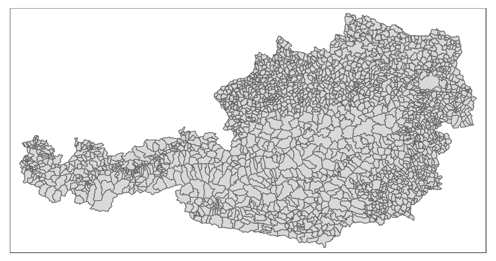</p>
</div>
<div id="die-attributdaten-joinen" class="section level3 hasAnchor" number="8.12.2">
<h3><span class="header-section-number">8.12.2</span> Die Attributdaten joinen<a href="08_cluster_II_v2.html#die-attributdaten-joinen" class="anchor-section" aria-label="Anchor link to header"></a></h3>
<p>Über einen Join können wir nun die Clusterzugehörigkeit an die Gemeindegeometrien anhängen:</p>
<div class="sourceCode" id="cb155"><pre class="sourceCode r"><code class="sourceCode r"><span id="cb155-1"><a href="08_cluster_II_v2.html#cb155-1" aria-hidden="true" tabindex="-1"></a>gem_clean_join <span class="ot">&lt;-</span> <span class="fu">left_join</span>(gem_clean, daten,</span>
<span id="cb155-2"><a href="08_cluster_II_v2.html#cb155-2" aria-hidden="true" tabindex="-1"></a>                            <span class="at">by =</span> <span class="fu">c</span>(<span class="st">&quot;id&quot;</span> <span class="ot">=</span> <span class="st">&quot;gem_id&quot;</span>))</span></code></pre></div>
<blockquote>
<p><strong>🤔 Warum nochmals per Join?</strong><br />
Sollte in der Zwischenzeit die betroffenen Dataframes unterschiedlich sortiert worden sein, würde ein einfaches Übertragen der Cluasterzugehörigkeit zu falschen Zuordnungen führen. Der bei einem Join durchgeführte Abgleich über die Gemeindekennzahl verhindert eine solche Fehlzuordnung.</p>
</blockquote>
</div>
<div id="die-räumliche-verteilung-der-cluster-darstellen" class="section level3 hasAnchor" number="8.12.3">
<h3><span class="header-section-number">8.12.3</span> Die räumliche Verteilung der Cluster darstellen<a href="08_cluster_II_v2.html#die-räumliche-verteilung-der-cluster-darstellen" class="anchor-section" aria-label="Anchor link to header"></a></h3>
<p>Mittels des tmap-Packages können wir nun die räumliche Verteilung der Cluster darstellen:</p>
<div class="sourceCode" id="cb156"><pre class="sourceCode r"><code class="sourceCode r"><span id="cb156-1"><a href="08_cluster_II_v2.html#cb156-1" aria-hidden="true" tabindex="-1"></a>map_Cl6 <span class="ot">&lt;-</span> <span class="fu">tm_shape</span>(gem_clean_join) <span class="sc">+</span></span>
<span id="cb156-2"><a href="08_cluster_II_v2.html#cb156-2" aria-hidden="true" tabindex="-1"></a>  <span class="fu">tm_polygons</span>(<span class="at">col =</span> <span class="st">&quot;fit1_cl6&quot;</span>,</span>
<span id="cb156-3"><a href="08_cluster_II_v2.html#cb156-3" aria-hidden="true" tabindex="-1"></a>              <span class="at">title =</span> <span class="st">&quot;6-er Cluster-</span><span class="sc">\n</span><span class="st">Lösung&quot;</span>,</span>
<span id="cb156-4"><a href="08_cluster_II_v2.html#cb156-4" aria-hidden="true" tabindex="-1"></a>              <span class="at">palette =</span> <span class="st">&quot;Set3&quot;</span>,</span>
<span id="cb156-5"><a href="08_cluster_II_v2.html#cb156-5" aria-hidden="true" tabindex="-1"></a>              <span class="co"># palette = wes_palette(&quot;Zissou1&quot;, 5),</span></span>
<span id="cb156-6"><a href="08_cluster_II_v2.html#cb156-6" aria-hidden="true" tabindex="-1"></a>              <span class="at">legend.hist =</span> <span class="cn">TRUE</span>) <span class="sc">+</span></span>
<span id="cb156-7"><a href="08_cluster_II_v2.html#cb156-7" aria-hidden="true" tabindex="-1"></a>  <span class="co"># tm_text(&quot;id&quot;, size = 0.45, alpha = 0.5, remove.overlap = TRUE) +</span></span>
<span id="cb156-8"><a href="08_cluster_II_v2.html#cb156-8" aria-hidden="true" tabindex="-1"></a>  <span class="fu">tm_scale_bar</span>(<span class="at">position =</span> <span class="fu">c</span>(<span class="st">&quot;left&quot;</span>, <span class="st">&quot;bottom&quot;</span>)) <span class="sc">+</span></span>
<span id="cb156-9"><a href="08_cluster_II_v2.html#cb156-9" aria-hidden="true" tabindex="-1"></a>  <span class="fu">tm_legend</span>(<span class="at">outside =</span> <span class="cn">TRUE</span>,</span>
<span id="cb156-10"><a href="08_cluster_II_v2.html#cb156-10" aria-hidden="true" tabindex="-1"></a>            <span class="at">legend.outside.size =</span> <span class="fl">0.15</span>,</span>
<span id="cb156-11"><a href="08_cluster_II_v2.html#cb156-11" aria-hidden="true" tabindex="-1"></a>            <span class="at">hist.width =</span> <span class="dv">1</span>,</span>
<span id="cb156-12"><a href="08_cluster_II_v2.html#cb156-12" aria-hidden="true" tabindex="-1"></a>            <span class="at">outer.margins =</span> <span class="dv">0</span>)</span>
<span id="cb156-13"><a href="08_cluster_II_v2.html#cb156-13" aria-hidden="true" tabindex="-1"></a>map_Cl6</span></code></pre></div>
<p>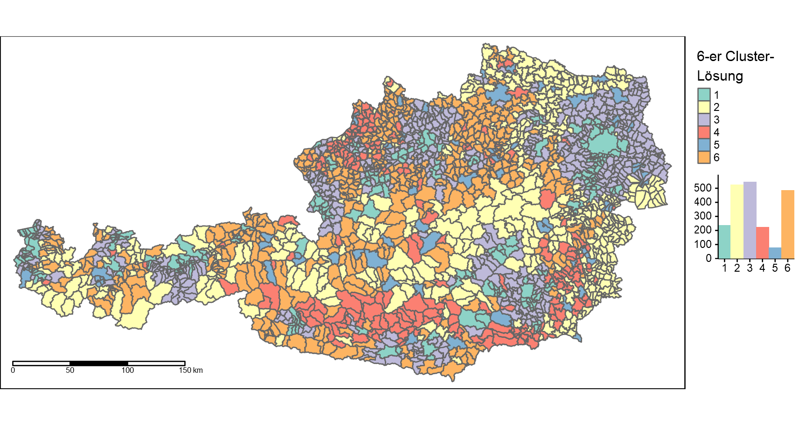</p>
<p>Und letztlich auch als unkomprimiertes Rasterbild abspeichern:</p>
<div class="sourceCode" id="cb157"><pre class="sourceCode r"><code class="sourceCode r"><span id="cb157-1"><a href="08_cluster_II_v2.html#cb157-1" aria-hidden="true" tabindex="-1"></a><span class="fu">tmap_save</span>(map_Cl6, <span class="at">filename =</span> <span class="st">&quot;output/map_Cl6.png&quot;</span>,</span>
<span id="cb157-2"><a href="08_cluster_II_v2.html#cb157-2" aria-hidden="true" tabindex="-1"></a>          <span class="at">units =</span> <span class="st">&quot;px&quot;</span>, <span class="at">dpi =</span> <span class="dv">300</span>,</span>
<span id="cb157-3"><a href="08_cluster_II_v2.html#cb157-3" aria-hidden="true" tabindex="-1"></a>          <span class="at">width =</span> <span class="dv">2000</span>)</span></code></pre></div>
<hr />
<p>🏆 <strong>Nun wissen wir, dass …</strong></p>
<ul>
<li>… wir Clusteranalyse auch zur <strong>Evaluation</strong> von (mehr oder minder sinnvollen 😉) <strong>Thesen</strong> nutzen können;</li>
<li>… wir mittels der <strong>Gower-Distanz</strong> auch gemischtskalige Modelle umsetzen können;</li>
<li>… die Clusterlösungen solcher Modelle oftmals stark durch die verwendeten qualitativen Variablen getrieben sein können;</li>
<li>… auch die <strong>räumliche Verteilung</strong> von Clustern manchmal aufschlussreich sein kann;</li>
<li>… wir in R auch <strong>einfache Bereinigungen von Geometrien</strong> vornehmen können;</li>
<li>… die “Hillbilly-These” in Österreich eine <strong>beschränkte räumliche Reichweite</strong> hat und nicht einheitlich auf “ländliche” Gemeinden angewandt werden kann.</li>
</ul>
<p></p>

</div>
</div>
</div>
            </section>

          </div>
        </div>
      </div>
<a href="07_cluster_I.html" class="navigation navigation-prev " aria-label="Previous page"><i class="fa fa-angle-left"></i></a>
<a href="80_atHome_2.html" class="navigation navigation-next " aria-label="Next page"><i class="fa fa-angle-right"></i></a>
    </div>
  </div>
<script src="libs/gitbook-2.6.7/js/app.min.js"></script>
<script src="libs/gitbook-2.6.7/js/clipboard.min.js"></script>
<script src="libs/gitbook-2.6.7/js/plugin-search.js"></script>
<script src="libs/gitbook-2.6.7/js/plugin-sharing.js"></script>
<script src="libs/gitbook-2.6.7/js/plugin-fontsettings.js"></script>
<script src="libs/gitbook-2.6.7/js/plugin-bookdown.js"></script>
<script src="libs/gitbook-2.6.7/js/jquery.highlight.js"></script>
<script src="libs/gitbook-2.6.7/js/plugin-clipboard.js"></script>
<script>
gitbook.require(["gitbook"], function(gitbook) {
gitbook.start({
"sharing": {
"github": false,
"facebook": false,
"twitter": false,
"linkedin": false,
"weibo": false,
"instapaper": false,
"vk": false,
"whatsapp": false,
"all": false
},
"fontsettings": {
"theme": "white",
"family": "sans",
"size": 2
},
"edit": {
"link": null,
"text": null
},
"history": {
"link": null,
"text": null
},
"view": {
"link": null,
"text": null
},
"download": null,
"search": {
"engine": "fuse",
"options": null
},
"toc": {
"collapse": "section"
},
"info": true
});
});
</script>

<!-- dynamically load mathjax for compatibility with self-contained -->
<script>
  (function () {
    var script = document.createElement("script");
    script.type = "text/javascript";
    var src = "true";
    if (src === "" || src === "true") src = "https://mathjax.rstudio.com/latest/MathJax.js?config=TeX-MML-AM_CHTML";
    if (location.protocol !== "file:")
      if (/^https?:/.test(src))
        src = src.replace(/^https?:/, '');
    script.src = src;
    document.getElementsByTagName("head")[0].appendChild(script);
  })();
</script>
</body>

</html>
